841 places
 Afrodisias Museum and Archaeological SiteAydın · Archaeological site
Afrodisias Museum and Archaeological SiteAydın · Archaeological site Ani Archaeological SiteKars · Archaeological site
Ani Archaeological SiteKars · Archaeological site Arslantepe Archaeological SiteMalatya · Archaeological site
Arslantepe Archaeological SiteMalatya · Archaeological site Acropolis of Pergamonİzmir · Archaeological site
Acropolis of Pergamonİzmir · Archaeological site Asclepieion of Pergamonİzmir · Archaeological site
Asclepieion of Pergamonİzmir · Archaeological site Bergama Kızılavluİzmir · Archaeological site
Bergama Kızılavluİzmir · Archaeological site Derinkuyu Underground CityNevşehir · Underground city
Derinkuyu Underground CityNevşehir · Underground city Ephesusİzmir · Archaeological site
Ephesusİzmir · Archaeological site El Nazar ChurchNevşehir · Religious building
El Nazar ChurchNevşehir · Religious building Gordion MuseumAnkara · Museum
Gordion MuseumAnkara · Museum Göbekli TepeŞanlıurfa · Archaeological site
Göbekli TepeŞanlıurfa · Archaeological site Göreme Archaeological SiteNevşehir · Archaeological site
Göreme Archaeological SiteNevşehir · Archaeological site HattusaÇorum · Archaeological site
HattusaÇorum · Archaeological site Hierapolis (Pamukkale)Denizli · Archaeological site
Hierapolis (Pamukkale)Denizli · Archaeological site Karanlık Kilise (Göreme)Nevşehir · Religious building
Karanlık Kilise (Göreme)Nevşehir · Religious building Kaymaklı Underground CityNevşehir · Underground city
Kaymaklı Underground CityNevşehir · Underground city Mount NemrutAdıyaman · Archaeological site
Mount NemrutAdıyaman · Archaeological site TroyÇanakkale · Archaeological site
TroyÇanakkale · Archaeological site Xanthos Archaeological SiteAntalya · Archaeological site
Xanthos Archaeological SiteAntalya · Archaeological site Zelve and PaşabağNevşehir · Archaeological site
Zelve and PaşabağNevşehir · Archaeological site Çatalhöyük Archaeological SiteKonya · Archaeological site
Çatalhöyük Archaeological SiteKonya · Archaeological site Çavuşin Archaeological Site and ChurchNevşehir · Archaeological site
Çavuşin Archaeological Site and ChurchNevşehir · Archaeological site 15 Temmuz Demokrasi MuseumAnkara · Museum
15 Temmuz Demokrasi MuseumAnkara · Museum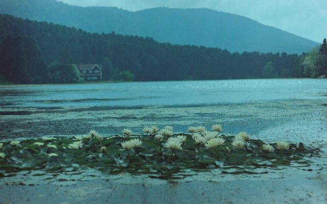
Lake Abant Nature ParkBolu · Lake AcemhöyükAksaray · Archaeological site
AcemhöyükAksaray · Archaeological site Ancient City of AdadaIsparta · Archaeological site
Ancient City of AdadaIsparta · Archaeological site Adalar Museumİstanbul · Museum
Adalar Museumİstanbul · Museum Adam Mickiewicz Museumİstanbul · Museum
Adam Mickiewicz Museumİstanbul · Museum AdamkayalarMersin · Archaeological site
AdamkayalarMersin · Archaeological site Adana Atatürk House MuseumAdana · Museum
Adana Atatürk House MuseumAdana · Museum Adana MuseumAdana · MuseumAdatepe Zeytinyağı MuseumÇanakkale · Museum
Adana MuseumAdana · MuseumAdatepe Zeytinyağı MuseumÇanakkale · Museum Adıyaman MuseumAdıyaman · Museum
Adıyaman MuseumAdıyaman · Museum Afyon Mevlevihanesi (Sultan Divani)Afyonkarahisar · Religious building
Afyon Mevlevihanesi (Sultan Divani)Afyonkarahisar · Religious building Afyonkarahisar CastleAfyonkarahisar · Castle & historic building
Afyonkarahisar CastleAfyonkarahisar · Castle & historic building Afyonkarahisar MuseumAfyonkarahisar · Museum
Afyonkarahisar MuseumAfyonkarahisar · Museum Agora Archaeological Siteİzmir · Archaeological site
Agora Archaeological Siteİzmir · Archaeological site Ahlat MuseumBitlis · Museum
Ahlat MuseumBitlis · Museum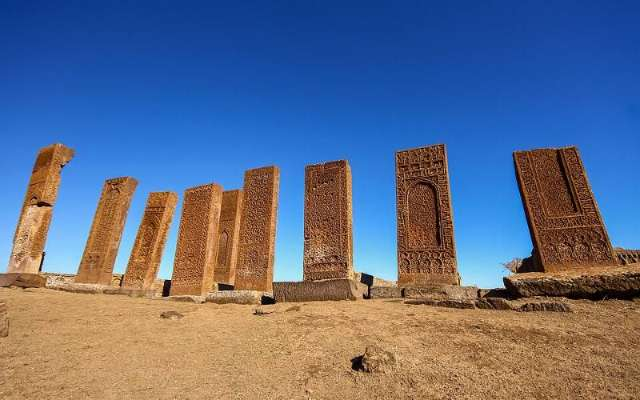
Ahlat Seljuk CemeteryBitlis · Archaeological site Ahmet Piriştina Kent Arşivi and Museumİzmir · Museum
Ahmet Piriştina Kent Arşivi and Museumİzmir · Museum Ahrida Synagogueİstanbul · Religious building
Ahrida Synagogueİstanbul · Religious building Ahşap Eserler MuseumEskişehir · MuseumAigai Archaeological SiteManisa · Archaeological site
Ahşap Eserler MuseumEskişehir · MuseumAigai Archaeological SiteManisa · Archaeological site Aizanoi Archaeological SiteKütahya · Archaeological siteAncient City of AkalissosAntalya · Archaeological siteAkdamar Monument MuseumVan · Museum
Aizanoi Archaeological SiteKütahya · Archaeological siteAncient City of AkalissosAntalya · Archaeological siteAkdamar Monument MuseumVan · Museum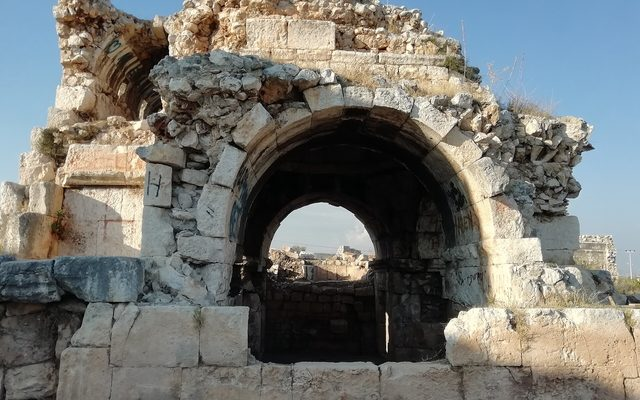
Akkale Archaeological SiteMersin · Archaeological siteMonastery Valley, AksarayAksaray · Archaeological site Aksaray MuseumAksaray · Museum
Aksaray MuseumAksaray · Museum Akçakoca (Ceneviz) CastleDüzce · Castle & historic building
Akçakoca (Ceneviz) CastleDüzce · Castle & historic building Akşehir Nasreddin Hoca Arkeoloji and Ethnography MuseumKonya · MuseumAkşemsettin TombBolu · Religious building
Akşehir Nasreddin Hoca Arkeoloji and Ethnography MuseumKonya · MuseumAkşemsettin TombBolu · Religious building Alabanda Archaeological SiteAydın · Archaeological site
Alabanda Archaeological SiteAydın · Archaeological site Alacahöyük Museum and Archaeological SiteÇorum · Archaeological site
Alacahöyük Museum and Archaeological SiteÇorum · Archaeological site Alaeddin MosqueKonya · Religious buildingAlaeddin Yavaşça Müze HouseKilis · Museum
Alaeddin MosqueKonya · Religious buildingAlaeddin Yavaşça Müze HouseKilis · Museum Alagadi Kaplumbağa PlajıGirne · Natural site
Alagadi Kaplumbağa PlajıGirne · Natural site Alagöz Karargâh MuseumAnkara · Museum
Alagöz Karargâh MuseumAnkara · Museum Alahan MonasteryMersin · Religious buildingAlanya Atatürk House MuseumAntalya · Museum
Alahan MonasteryMersin · Religious buildingAlanya Atatürk House MuseumAntalya · Museum Alanya CastleAntalya · Castle & historic building
Alanya CastleAntalya · Castle & historic building Alanya MuseumAntalya · Museum
Alanya MuseumAntalya · Museum AlarahanAntalya · Castle & historic building
AlarahanAntalya · Castle & historic building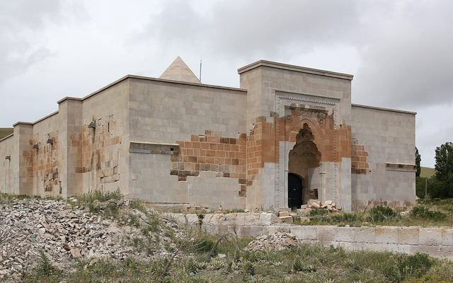
Alay CaravanseraiAksaray · Castle & historic buildingAlaçam Mübadele MuseumSamsun · Museum Alaşehir Archaeological SiteManisa · Archaeological site
Alaşehir Archaeological SiteManisa · Archaeological site Alexandria Troas Archaeological SiteÇanakkale · Archaeological siteAli Demirsoy Doğal Tarih MuseumErzincan · Museum
Alexandria Troas Archaeological SiteÇanakkale · Archaeological siteAli Demirsoy Doğal Tarih MuseumErzincan · Museum Alinda Archaeological SiteAydın · Archaeological site
Alinda Archaeological SiteAydın · Archaeological site Alişar MoundYozgat · Archaeological site
Alişar MoundYozgat · Archaeological site Altınköy Açık Hava MuseumAnkara · Museum
Altınköy Açık Hava MuseumAnkara · Museum Altıntepe Urartu CastleErzincan · Archaeological site
Altıntepe Urartu CastleErzincan · Archaeological site Amasra CastleBartın · Castle & historic building
Amasra CastleBartın · Castle & historic building Amasra MuseumBartın · Museum
Amasra MuseumBartın · Museum Amasya MuseumAmasya · Museum
Amasya MuseumAmasya · Museum Amintas Kaya MezarıMuğla · Archaeological site
Amintas Kaya MezarıMuğla · Archaeological site Amisos Hill (Ancient Amisos)Samsun · Archaeological site
Amisos Hill (Ancient Amisos)Samsun · Archaeological site Ancient City of AmoriumAfyonkarahisar · Archaeological site
Ancient City of AmoriumAfyonkarahisar · Archaeological site Ancient City of AmosMuğla · Archaeological siteAncient City of AmyzonAydın · Archaeological site
Ancient City of AmosMuğla · Archaeological siteAncient City of AmyzonAydın · Archaeological site Anadoluhisarı Fortressİstanbul · Castle & historic building
Anadoluhisarı Fortressİstanbul · Castle & historic building Anadolu Medeniyetleri MuseumAnkara · Museum
Anadolu Medeniyetleri MuseumAnkara · Museum Anadolu Yaşayan Köy Açık Hava MuseumAnkara · MuseumAnamur MuseumMersin · Museum
Anadolu Yaşayan Köy Açık Hava MuseumAnkara · MuseumAnamur MuseumMersin · Museum Anavarza Archaeological SiteAdana · Archaeological site
Anavarza Archaeological SiteAdana · Archaeological site Anemurium Archaeological SiteMersin · Archaeological site
Anemurium Archaeological SiteMersin · Archaeological site Ankara CastleAnkara · Castle & historic building
Ankara CastleAnkara · Castle & historic building Ankara Oyuncak MuseumAnkara · Museum
Ankara Oyuncak MuseumAnkara · Museum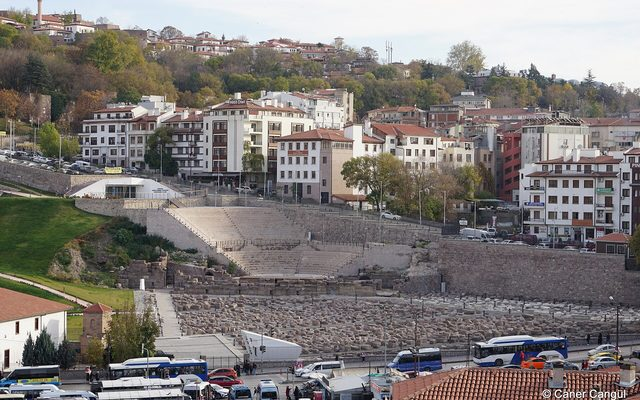
Ankara Roma TiyatrosuAnkara · Archaeological site Antalya Atatürk House MuseumAntalya · Museum
Antalya Atatürk House MuseumAntalya · Museum Antalya Ethnography MuseumAntalya · Museum
Antalya Ethnography MuseumAntalya · Museum Antalya MuseumAntalya · MuseumAntalya Nekropol MuseumAntalya · Museum
Antalya MuseumAntalya · MuseumAntalya Nekropol MuseumAntalya · Museum Antalya Oyuncak MuseumAntalya · Museum
Antalya Oyuncak MuseumAntalya · Museum Ancient City of Antalya SyedraAntalya · Archaeological site
Ancient City of Antalya SyedraAntalya · Archaeological site Ancient City of AntandrosBalıkesir · Archaeological site
Ancient City of AntandrosBalıkesir · Archaeological site Antiocheia Archaeological SiteIsparta · Archaeological site
Antiocheia Archaeological SiteIsparta · Archaeological site Ancient City of Antiokheia ad CragumAntalya · Archaeological site
Ancient City of Antiokheia ad CragumAntalya · Archaeological site Antiphellos Antik Tiyatrosu (Kaş)Antalya · Archaeological site
Antiphellos Antik Tiyatrosu (Kaş)Antalya · Archaeological site Antiphonitis ChurchGirne · Religious building
Antiphonitis ChurchGirne · Religious building Anıtkabir (Atatürk Mausoleum)Ankara · Museum
Anıtkabir (Atatürk Mausoleum)Ankara · Museum Ancient City of AperlaiAntalya · Archaeological site
Ancient City of AperlaiAntalya · Archaeological site Apollon Smintheion Archaeological SiteÇanakkale · Archaeological site
Apollon Smintheion Archaeological SiteÇanakkale · Archaeological site Ancient City of Apollonia (Likya)Antalya · Archaeological site
Ancient City of Apollonia (Likya)Antalya · Archaeological site Apostolos Andreas Monasteryİskele · Religious building
Apostolos Andreas Monasteryİskele · Religious building Ara Güler Museumİstanbul · Museum
Ara Güler Museumİstanbul · Museum Ancient City of AriassosAntalya · Archaeological site
Ancient City of AriassosAntalya · Archaeological site Arkas Sanat Merkeziİzmir · MuseumAncient City of ArneaiAntalya · Archaeological site
Arkas Sanat Merkeziİzmir · MuseumAncient City of ArneaiAntalya · Archaeological site Ancient City of ArsadaMuğla · Archaeological site
Ancient City of ArsadaMuğla · Archaeological site Arsemeia Archaeological SiteAdıyaman · Archaeological site
Arsemeia Archaeological SiteAdıyaman · Archaeological site Arterİstanbul · Museum
Arterİstanbul · Museum Arykanda Archaeological SiteAntalya · Archaeological site
Arykanda Archaeological SiteAntalya · Archaeological site Ashab-ı Kehf ComplexKahramanmaraş · Religious building
Ashab-ı Kehf ComplexKahramanmaraş · Religious building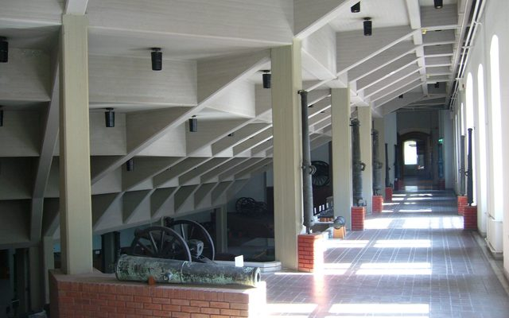
Askeri Müzeİstanbul · Museum AspendosAntalya · Archaeological site
AspendosAntalya · Archaeological site Assos Archaeological SiteÇanakkale · Archaeological siteAtatürk House MuseumDiyarbakır · Museum
Assos Archaeological SiteÇanakkale · Archaeological siteAtatürk House MuseumDiyarbakır · Museum Atatürk Konutu and Demiryolları MuseumAnkara · Museum
Atatürk Konutu and Demiryolları MuseumAnkara · Museum Atatürk Müzesi (Şişli)İstanbul · MuseumAtatürk and Ethnography MuseumUşak · Museum
Atatürk Müzesi (Şişli)İstanbul · MuseumAtatürk and Ethnography MuseumUşak · Museum Atatürk, Redif and Ethnography MuseumKocaeli · Museum
Atatürk, Redif and Ethnography MuseumKocaeli · Museum Atlas 1948 İstanbul Sinema Museumİstanbul · Museum
Atlas 1948 İstanbul Sinema Museumİstanbul · Museum Temple of AugustusAnkara · Archaeological site
Temple of AugustusAnkara · Archaeological site Hunting Lodge Palace Museum, İzmitKocaeli · Museum
Hunting Lodge Palace Museum, İzmitKocaeli · Museum Hagia Irene Monument Museumİstanbul · Religious building
Hagia Irene Monument Museumİstanbul · Religious building Ayanis CastleVan · Archaeological site
Ayanis CastleVan · Archaeological site Ayas (Yumurtalık) CastleAdana · Castle & historic building
Ayas (Yumurtalık) CastleAdana · Castle & historic building Hagia Sophia History and Experience Museumİstanbul · Museum
Hagia Sophia History and Experience Museumİstanbul · Museum Hagia Sophia Grand Mosqueİstanbul · Religious building
Hagia Sophia Grand Mosqueİstanbul · Religious building Ayasuluk - St.Jean Archaeological Siteİzmir · Archaeological site
Ayasuluk - St.Jean Archaeological Siteİzmir · Archaeological site Ayasuluk Castleİzmir · Castle & historic building
Ayasuluk Castleİzmir · Castle & historic building Aydın Archaeology MuseumAydın · MuseumAyia Trias Bazilikasıİskele · Religious building
Aydın Archaeology MuseumAydın · MuseumAyia Trias Bazilikasıİskele · Religious building Aynalıkavak Pavilionİstanbul · Castle & historic building
Aynalıkavak Pavilionİstanbul · Castle & historic building Aziz (St.) Nikolaos Monument MuseumAntalya · MuseumAziz Mercurius Underground CityAksaray · Underground cityAziz Pavlus WayAntalya · Hiking trail
Aziz (St.) Nikolaos Monument MuseumAntalya · MuseumAziz Mercurius Underground CityAksaray · Underground cityAziz Pavlus WayAntalya · Hiking trail Tell Atchana (Alalakh)Hatay · Archaeological site
Tell Atchana (Alalakh)Hatay · Archaeological site Ağzıkara CaravanseraiAksaray · Castle & historic building
Ağzıkara CaravanseraiAksaray · Castle & historic building Aşık Veysel MuseumSivas · Museum
Aşık Veysel MuseumSivas · Museum Aşıklı MoundAksaray · Archaeological site
Aşıklı MoundAksaray · Archaeological site Lake Bafa Nature ParkMuğla · Lake
Lake Bafa Nature ParkMuğla · Lake Bafra MuseumSamsun · Museum
Bafra MuseumSamsun · Museum Bakras CastleHatay · Castle & historic buildingAncient City of BalburaBurdur · Archaeological site
Bakras CastleHatay · Castle & historic buildingAncient City of BalburaBurdur · Archaeological site Balıkesir Kuvâ-yı Milliye MuseumBalıkesir · Museum
Balıkesir Kuvâ-yı Milliye MuseumBalıkesir · Museum Balıklıgöl and Halil-ür Rahman MosqueŞanlıurfa · Religious building
Balıklıgöl and Halil-ür Rahman MosqueŞanlıurfa · Religious building Bandırma MuseumBalıkesir · Museum
Bandırma MuseumBalıkesir · Museum Bandırma Vapuru Gemi MuseumSamsun · Museum
Bandırma Vapuru Gemi MuseumSamsun · Museum Barbarlık MuseumLefkoşa · Museum
Barbarlık MuseumLefkoşa · Museum Ancient City of BargyliaMuğla · Archaeological site
Ancient City of BargyliaMuğla · Archaeological site Batman MuseumBatman · Museum
Batman MuseumBatman · Museum Batı Cephesi Karargahı MuseumKonya · Museum
Batı Cephesi Karargahı MuseumKonya · Museum Bayburt Baksı MuseumBayburt · MuseumBeldibi CaveAntalya · Archaeological site
Bayburt Baksı MuseumBayburt · MuseumBeldibi CaveAntalya · Archaeological site Bellapais MonasteryGirne · Religious building
Bellapais MonasteryGirne · Religious building Pergamon Museumİzmir · Museum
Pergamon Museumİzmir · Museum Beyazıt Hamam Kültürü Museumİstanbul · Museum
Beyazıt Hamam Kültürü Museumİstanbul · Museum Beycesultan MoundDenizli · Archaeological site
Beycesultan MoundDenizli · Archaeological site Beykoz Cam and Billur Museumİstanbul · Museum
Beykoz Cam and Billur Museumİstanbul · Museum Beylerbeyi Palaceİstanbul · Castle & historic building
Beylerbeyi Palaceİstanbul · Castle & historic building Beypazarı Yaşayan MüzeAnkara · Museum
Beypazarı Yaşayan MüzeAnkara · Museum Lake Beyşehir National ParkKonya · LakeBeşkonaklar Etnografya Müzesi and Geleneksel Malatya HouseMalatya · Museum
Lake Beyşehir National ParkKonya · LakeBeşkonaklar Etnografya Müzesi and Geleneksel Malatya HouseMalatya · Museum Beşparmak DağlarıGirne · Natural siteBilecik MuseumBilecik · Museum
Beşparmak DağlarıGirne · Natural siteBilecik MuseumBilecik · Museum Bin Tepe Lidya TümülüsleriManisa · Archaeological site
Bin Tepe Lidya TümülüsleriManisa · Archaeological site Binbir KiliseKaraman · Archaeological site
Binbir KiliseKaraman · Archaeological site Binbirdirek Cisternİstanbul · Castle & historic building
Binbirdirek Cisternİstanbul · Castle & historic building Floating Islands of BingölBingöl · Lake
Floating Islands of BingölBingöl · Lake Çakırağa Mansion, Birgiİzmir · MuseumBitlis Ethnography MuseumBitlis · Museum
Çakırağa Mansion, Birgiİzmir · MuseumBitlis Ethnography MuseumBitlis · Museum Bitlis CastleBitlis · Castle & historic building
Bitlis CastleBitlis · Castle & historic building Blaundos Archaeological SiteUşak · Archaeological site
Blaundos Archaeological SiteUşak · Archaeological site Bodrum Ancient TheatreMuğla · Archaeological siteBodrum Serçe Limanı Cam Batığı Sergi SalonuMuğla · Museum
Bodrum Ancient TheatreMuğla · Archaeological siteBodrum Serçe Limanı Cam Batığı Sergi SalonuMuğla · Museum Bodrum Sualtı Archaeology MuseumMuğla · Museum
Bodrum Sualtı Archaeology MuseumMuğla · Museum Bolaman Castle and Hazinedaroğlu MansionOrdu · Castle & historic building
Bolaman Castle and Hazinedaroğlu MansionOrdu · Castle & historic building Bolu MuseumBolu · Museum
Bolu MuseumBolu · Museum Boncuklu MoundKonya · Archaeological site
Boncuklu MoundKonya · Archaeological site Bostanlı Açık Hava Archaeology Museumİzmir · Museum
Bostanlı Açık Hava Archaeology Museumİzmir · Museum Bozdoğan Kemeriİstanbul · Castle & historic buildingBoğatepe Peynir MuseumKars · Museum
Bozdoğan Kemeriİstanbul · Castle & historic buildingBoğatepe Peynir MuseumKars · Museum Boğazköy MuseumÇorum · Museum
Boğazköy MuseumÇorum · Museum Buffavento CastleGirne · Castle & historic building
Buffavento CastleGirne · Castle & historic building Bulgar Sveti Stefan (Demir) Churchİstanbul · Religious building
Bulgar Sveti Stefan (Demir) Churchİstanbul · Religious building Burdur MuseumBurdur · Museum
Burdur MuseumBurdur · Museum Bursa Archaeology MuseumBursa · Museum
Bursa Archaeology MuseumBursa · Museum Bursa Atatürk House MuseumBursa · Museum
Bursa Atatürk House MuseumBursa · Museum Bursa City MuseumBursa · Museum
Bursa City MuseumBursa · Museum Bursa Türk İslam Eserleri MuseumBursa · Museum
Bursa Türk İslam Eserleri MuseumBursa · Museum Bursa Ulu MosqueBursa · Religious building
Bursa Ulu MosqueBursa · Religious building Green Mosque and Green Tomb, BursaBursa · Religious buildingBursa İznik Göl BazilikasıBursa · Religious building
Green Mosque and Green Tomb, BursaBursa · Religious buildingBursa İznik Göl BazilikasıBursa · Religious building Büyük Ağa MadrasaAmasya · Religious building
Büyük Ağa MadrasaAmasya · Religious building Büyük Han (Great Inn)Lefkoşa · Castle & historic building
Büyük Han (Great Inn)Lefkoşa · Castle & historic building Great Palace Mosaic Museumİstanbul · Museum
Great Palace Mosaic Museumİstanbul · Museum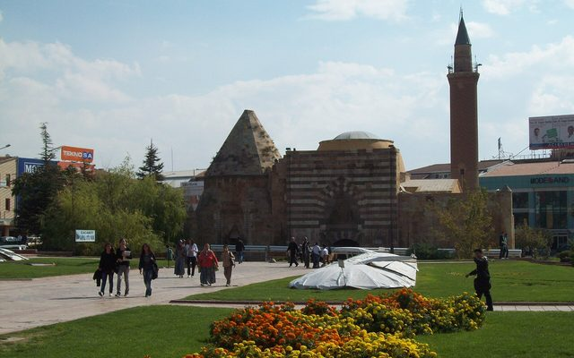
Cacabey MadrasaKırşehir · Religious building Cahit Sıtkı Tarancı House Ethnography MuseumDiyarbakır · Museum
Cahit Sıtkı Tarancı House Ethnography MuseumDiyarbakır · Museum Cehennemağzı MağaralarıZonguldak · Natural site
Cehennemağzı MağaralarıZonguldak · Natural site Cendere BridgeAdıyaman · Castle & historic building
Cendere BridgeAdıyaman · Castle & historic building Cendere Sanat Museumİstanbul · Museum
Cendere Sanat Museumİstanbul · Museum CerModernAnkara · Museum
CerModernAnkara · Museum Cinci CaravanseraiKarabük · Castle & historic building
Cinci CaravanseraiKarabük · Castle & historic building Red Madrasa of CizreŞırnak · Castle & historic building
Red Madrasa of CizreŞırnak · Castle & historic building Cumalıkızık KöyüBursa · Castle & historic building
Cumalıkızık KöyüBursa · Castle & historic building Cumhuriyet MuseumAnkara · Museum
Cumhuriyet MuseumAnkara · Museum Dalaman ÇayıMuğla · Rafting
Dalaman ÇayıMuğla · Rafting Dara Archaeological SiteMardin · Archaeological site
Dara Archaeological SiteMardin · Archaeological site Ancient City of DaskyleionBalıkesir · Archaeological siteDavraz Kayak MerkeziIsparta · Ski resortDemirköy Iron FoundryKırklareli · Archaeological site
Ancient City of DaskyleionBalıkesir · Archaeological siteDavraz Kayak MerkeziIsparta · Ski resortDemirköy Iron FoundryKırklareli · Archaeological site Denizli Atatürk and Ethnography MuseumDenizli · Museum
Denizli Atatürk and Ethnography MuseumDenizli · Museum Denizli City MuseumDenizli · Museum
Denizli City MuseumDenizli · Museum Denizli Tripolis Archaeological SiteDenizli · Archaeological siteDerbe MoundKaraman · Archaeological site
Denizli Tripolis Archaeological SiteDenizli · Archaeological siteDerbe MoundKaraman · Archaeological site Derviş Paşa MansionLefkoşa · Museum
Derviş Paşa MansionLefkoşa · Museum State Cemetery, AnkaraAnkara · Castle & historic building
State Cemetery, AnkaraAnkara · Castle & historic building Devrim Arabaları MuseumEskişehir · Museum
Devrim Arabaları MuseumEskişehir · Museum Deyrulzafaran MonasteryMardin · Religious building
Deyrulzafaran MonasteryMardin · Religious building Dicle Tüneli (Birkleyn Mağaraları)Diyarbakır · Archaeological site
Dicle Tüneli (Birkleyn Mağaraları)Diyarbakır · Archaeological site Temple of Didim ApollonAydın · Archaeological site
Temple of Didim ApollonAydın · Archaeological site Great Mosque and Hospital of DivriğiSivas · Religious building
Great Mosque and Hospital of DivriğiSivas · Religious building Diyarbakır Archaeology MuseumDiyarbakır · Museum
Diyarbakır Archaeology MuseumDiyarbakır · Museum Diyarbakır SurlarıDiyarbakır · Castle & historic building
Diyarbakır SurlarıDiyarbakır · Castle & historic building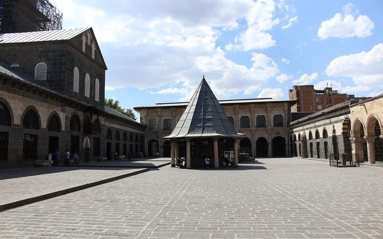
Diyarbakır Ulu MosqueDiyarbakır · Religious building Dolmabahçe Palaceİstanbul · Castle & historic buildingDoğa Tarihi MuseumBurdur · Museum
Dolmabahçe Palaceİstanbul · Castle & historic buildingDoğa Tarihi MuseumBurdur · Museum Dupnisa CaveKırklareli · Natural site
Dupnisa CaveKırklareli · Natural site Düden ŞelaleleriAntalya · WaterfallAncient City of Dülük (Doliche)Gaziantep · Archaeological site
Düden ŞelaleleriAntalya · WaterfallAncient City of Dülük (Doliche)Gaziantep · Archaeological site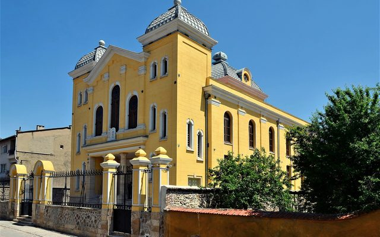
Great Synagogue of EdirneEdirne · Religious buildingEdirne Hıdırlık Tabya Balkan Tarihi MuseumEdirne · Museum Edirne Makedonya TowerEdirne · Castle & historic building
Edirne Makedonya TowerEdirne · Castle & historic building Edirne MuseumEdirne · Museum
Edirne MuseumEdirne · Museum Edirne Palace Ruins (Saray-ı Cedid)Edirne · Archaeological site
Edirne Palace Ruins (Saray-ı Cedid)Edirne · Archaeological site Edirne Selimiye MosqueEdirne · Religious buildingEfes Deneyim Museumİzmir · Museum
Edirne Selimiye MosqueEdirne · Religious buildingEfes Deneyim Museumİzmir · Museum Ephesus Museumİzmir · Museum
Ephesus Museumİzmir · Museum Efes Örenyeri-Yamaçevlerİzmir · Archaeological site
Efes Örenyeri-Yamaçevlerİzmir · Archaeological site Eflatunpınar Hittite Spring SanctuaryKonya · Archaeological siteEge University Natural History Museumİzmir · Museum
Eflatunpınar Hittite Spring SanctuaryKonya · Archaeological siteEge University Natural History Museumİzmir · Museum Ancient City of Elaiussa SebasteMersin · Archaeological siteElazığ MuseumElâzığ · MuseumElbistan Şehir MuseumKahramanmaraş · Museum
Ancient City of Elaiussa SebasteMersin · Archaeological siteElazığ MuseumElâzığ · MuseumElbistan Şehir MuseumKahramanmaraş · Museum Elgiz Çağdaş Sanat Museumİstanbul · MuseumElmalı MuseumAntalya · MuseumEmine Göğüş Mutfak MuseumGaziantep · Museum
Elgiz Çağdaş Sanat Museumİstanbul · MuseumElmalı MuseumAntalya · MuseumEmine Göğüş Mutfak MuseumGaziantep · Museum Emir Sultan MosqueBursa · Religious building
Emir Sultan MosqueBursa · Religious building Enez Castle (Ainos)Edirne · Castle & historic building
Enez Castle (Ainos)Edirne · Castle & historic building Enkomi (Alasya) Archaeological SiteGazimağusa · Archaeological site
Enkomi (Alasya) Archaeological SiteGazimağusa · Archaeological site Erciyes Kayak MerkeziKayseri · Ski resortEreğli MuseumKonya · Museum
Erciyes Kayak MerkeziKayseri · Ski resortEreğli MuseumKonya · Museum Erfelek Tatlıca ŞelaleleriSinop · Waterfall
Erfelek Tatlıca ŞelaleleriSinop · Waterfall Erimtan Arkeoloji and Sanat MuseumAnkara · MuseumErmenek Ahmet Keleşoğlu Arkeoloji and Ethnography MuseumKaraman · Museum
Erimtan Arkeoloji and Sanat MuseumAnkara · MuseumErmenek Ahmet Keleşoğlu Arkeoloji and Ethnography MuseumKaraman · Museum Ancient City of Erythraiİzmir · Archaeological site
Ancient City of Erythraiİzmir · Archaeological site Erzincan MuseumErzincan · Museum
Erzincan MuseumErzincan · Museum Erzurum Atatürk House MuseumErzurum · Museum
Erzurum Atatürk House MuseumErzurum · Museum Erzurum CastleErzurum · Castle & historic building
Erzurum CastleErzurum · Castle & historic building Erzurum MuseumErzurum · MuseumErzurum Resim Heykel MuseumErzurum · Museum
Erzurum MuseumErzurum · MuseumErzurum Resim Heykel MuseumErzurum · Museum Eski Smyrna (Bayraklı Höyüğü)İzmir · Archaeological site
Eski Smyrna (Bayraklı Höyüğü)İzmir · Archaeological site Eskişehir Kurtuluş MuseumEskişehir · MuseumAncient City of EtennaAntalya · Archaeological site
Eskişehir Kurtuluş MuseumEskişehir · MuseumAncient City of EtennaAntalya · Archaeological site Eti Archaeology MuseumEskişehir · Museum
Eti Archaeology MuseumEskişehir · Museum Etnografya MuseumAnkara · Museum
Etnografya MuseumAnkara · Museum Evliya Çelebi WayKütahya · Hiking trail
Evliya Çelebi WayKütahya · Hiking trail Eyüp Sultan Mosqueİstanbul · Religious building
Eyüp Sultan Mosqueİstanbul · Religious building Eğil Castle and Prophets' TombsDiyarbakır · Castle & historic building
Eğil Castle and Prophets' TombsDiyarbakır · Castle & historic building Lake EğirdirIsparta · Lake
Lake EğirdirIsparta · Lake Eğitim Karikatürleri MuseumEskişehir · Museum
Eğitim Karikatürleri MuseumEskişehir · Museum Fasıllar Monument (Hittite)Konya · Archaeological siteFener Rum Patrikhanesi and Aya Yorgi Churchİstanbul · Religious building
Fasıllar Monument (Hittite)Konya · Archaeological siteFener Rum Patrikhanesi and Aya Yorgi Churchİstanbul · Religious building Fenerbahçe Museumİstanbul · Museum
Fenerbahçe Museumİstanbul · Museum Fethiye Gemile AdasıMuğla · Archaeological site
Fethiye Gemile AdasıMuğla · Archaeological site Fethiye Kayaköy Archaeological SiteMuğla · Archaeological site
Fethiye Kayaköy Archaeological SiteMuğla · Archaeological site Fethiye Letoon Archaeological SiteMuğla · Archaeological site
Fethiye Letoon Archaeological SiteMuğla · Archaeological site Fethiye Museumİstanbul · Museum
Fethiye Museumİstanbul · Museum Fethiye MuseumMuğla · Museum
Fethiye MuseumMuğla · Museum Fethiye Pınara Archaeological SiteMuğla · Archaeological site
Fethiye Pınara Archaeological SiteMuğla · Archaeological site Fethiye Tlos Archaeological SiteMuğla · Archaeological siteFildamı Cisternİstanbul · Castle & historic buildingFilyos(Tios) Archaeological SiteZonguldak · Archaeological site
Fethiye Tlos Archaeological SiteMuğla · Archaeological siteFildamı Cisternİstanbul · Castle & historic buildingFilyos(Tios) Archaeological SiteZonguldak · Archaeological site Florya Atatürk Deniz Pavilionİstanbul · Museum
Florya Atatürk Deniz Pavilionİstanbul · Museum Frig WayEskişehir · Hiking trail
Frig WayEskişehir · Hiking trail Fırtına DeresiRize · RaftingAncient City of GagaeAntalya · Archaeological site
Fırtına DeresiRize · RaftingAncient City of GagaeAntalya · Archaeological site Galata Mevlevihanesi Museumİstanbul · Museum
Galata Mevlevihanesi Museumİstanbul · Museum Gazi PavilionDiyarbakır · Castle & historic building
Gazi PavilionDiyarbakır · Castle & historic building Gazi MuseumSamsun · Museum
Gazi MuseumSamsun · Museum Gaziantep Archaeology MuseumGaziantep · Museum
Gaziantep Archaeology MuseumGaziantep · Museum Gaziantep CastleGaziantep · Castle & historic building
Gaziantep CastleGaziantep · Castle & historic building Gaziantep Savunması and Kahramanlık Panorama MuseumGaziantep · Museum
Gaziantep Savunması and Kahramanlık Panorama MuseumGaziantep · Museum Gelibolu Savaş MuseumÇanakkale · Museum
Gelibolu Savaş MuseumÇanakkale · Museum Gelibolu Tarihi Alanı (Çanakkale Savaşları)Çanakkale · Archaeological site
Gelibolu Tarihi Alanı (Çanakkale Savaşları)Çanakkale · Archaeological site Ancient City of GergaAydın · Archaeological siteGermanicia Mozaikli AlanKahramanmaraş · Archaeological site
Ancient City of GergaAydın · Archaeological siteGermanicia Mozaikli AlanKahramanmaraş · Archaeological site Giresun CastleGiresun · Castle & historic building
Giresun CastleGiresun · Castle & historic building Giresun MuseumGiresun · Museum
Giresun MuseumGiresun · Museum Girlevik WaterfallErzincan · Waterfall
Girlevik WaterfallErzincan · Waterfall Girne Dağ Yürüyüş WayGirne · Hiking trail
Girne Dağ Yürüyüş WayGirne · Hiking trail Kyrenia Castle and Shipwreck MuseumGirne · Castle & historic building
Kyrenia Castle and Shipwreck MuseumGirne · Castle & historic building Girne İkon MuseumGirne · Museum
Girne İkon MuseumGirne · Museum Gökkale Archaeological SiteMersin · Archaeological site
Gökkale Archaeological SiteMersin · Archaeological site Gökyay Vakfı Satranç MuseumAnkara · Museum
Gökyay Vakfı Satranç MuseumAnkara · Museum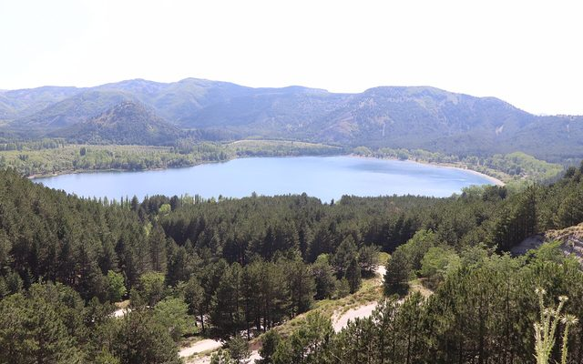
Gölcük Crater Lake Nature ParkIsparta · Lake Gölyazı (Apollonia ad Rhyndacum)Bursa · Archaeological site
Gölyazı (Apollonia ad Rhyndacum)Bursa · Archaeological site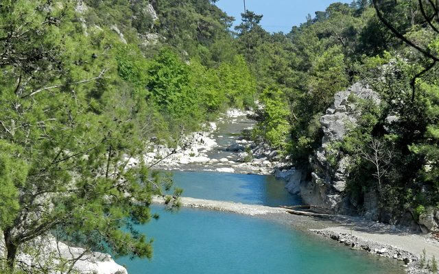
Göynük CanyonAntalya · Canyon Gözne CastleMersin · Castle & historic building
Gözne CastleMersin · Castle & historic building Gülşehir-St.Jean ChurchNevşehir · Religious buildingGümüşhane MuseumGümüşhane · Museum
Gülşehir-St.Jean ChurchNevşehir · Religious buildingGümüşhane MuseumGümüşhane · Museum Gümüşkesen Anıt MezarıMuğla · Archaeological site
Gümüşkesen Anıt MezarıMuğla · Archaeological site Gümüşler Monastery and Underground CityNiğde · Underground city
Gümüşler Monastery and Underground CityNiğde · Underground city Güpgüpoğlu Mansion Ethnography MuseumKayseri · Museum
Güpgüpoğlu Mansion Ethnography MuseumKayseri · Museum Güzelyurt Arkeoloji and Doğa Tarihi MuseumGüzelyurt · Museum
Güzelyurt Arkeoloji and Doğa Tarihi MuseumGüzelyurt · Museum Güzelyurt Manastır ValleyAksaray · Religious building
Güzelyurt Manastır ValleyAksaray · Religious building Gıduts MonasteryVan · Religious building
Gıduts MonasteryVan · Religious building Habib-i Neccar MosqueHatay · Religious building
Habib-i Neccar MosqueHatay · Religious building Hacı Bayram Veli MosqueAnkara · Religious building
Hacı Bayram Veli MosqueAnkara · Religious building Hacıbektaş MuseumNevşehir · Museum
Hacıbektaş MuseumNevşehir · Museum Hacılar MoundBurdur · Archaeological site
Hacılar MoundBurdur · Archaeological site Hadrian KapısıAntalya · Castle & historic buildingHadrianopolis Archaeological SiteKarabük · Archaeological site
Hadrian KapısıAntalya · Castle & historic buildingHadrianopolis Archaeological SiteKarabük · Archaeological site Hafıza 15 Temmuz Museumİstanbul · MuseumMeydan Madrasa, HakkariHakkari · Castle & historic building
Hafıza 15 Temmuz Museumİstanbul · MuseumMeydan Madrasa, HakkariHakkari · Castle & historic building Haleplibahçe Mosaic MuseumŞanlıurfa · MuseumHamidiye Tabyası and Çanakkale Savaşları Tarihi MuseumÇanakkale · Museum
Haleplibahçe Mosaic MuseumŞanlıurfa · MuseumHamidiye Tabyası and Çanakkale Savaşları Tarihi MuseumÇanakkale · Museum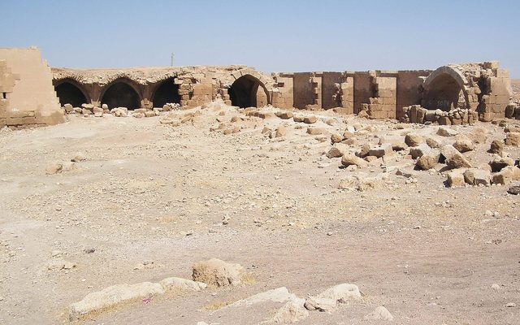
Han el Ba'rur CaravanseraiŞanlıurfa · Castle & historic buildingHarbiye ŞelaleleriHatay · Waterfall Harput CastleElâzığ · Castle & historic building
Harput CastleElâzığ · Castle & historic building Harran Archaeological SiteŞanlıurfa · Archaeological site
Harran Archaeological SiteŞanlıurfa · Archaeological site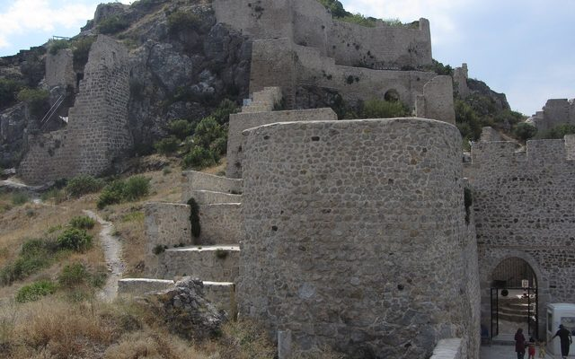
Harşena CastleAmasya · Castle & historic building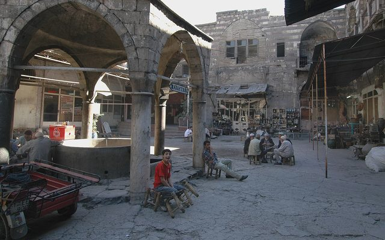
Hasan Paşa CaravanseraiDiyarbakır · Castle & historic building Hasan Süzer Ethnography MuseumGaziantep · Museum
Hasan Süzer Ethnography MuseumGaziantep · Museum Hasankeyf Museum and Archaeological SiteBatman · Archaeological site
Hasankeyf Museum and Archaeological SiteBatman · Archaeological site Hatay Archaeology MuseumHatay · MuseumHatay Necmi Asfuroğlu Archaeology MuseumHatay · Museum
Hatay Archaeology MuseumHatay · MuseumHatay Necmi Asfuroğlu Archaeology MuseumHatay · Museum Hava Kuvvetleri MuseumAnkara · Museum
Hava Kuvvetleri MuseumAnkara · Museum Havariler (Kümbet) MosqueKars · Religious buildingHavza Atatürk House MuseumSamsun · Museum
Havariler (Kümbet) MosqueKars · Religious buildingHavza Atatürk House MuseumSamsun · Museum Lake HazarElâzığ · Lake
Lake HazarElâzığ · Lake Hazeranlar MansionAmasya · Museum
Hazeranlar MansionAmasya · Museum Helles Anıtı (Seddülbahir)Çanakkale · Archaeological site
Helles Anıtı (Seddülbahir)Çanakkale · Archaeological site Ancient City of Herakleia (Latmos)Muğla · Archaeological site
Ancient City of Herakleia (Latmos)Muğla · Archaeological site Ancient City of Herakleia SalbakeDenizli · Archaeological site
Ancient City of Herakleia SalbakeDenizli · Archaeological site Hierapolis (Pamukkale) Archaeology MuseumDenizli · MuseumHilmi Nakipoğlu Fotoğraf Makineleri Museumİstanbul · MuseumHisart Canlı Tarih and Diorama Museumİstanbul · Museum
Hierapolis (Pamukkale) Archaeology MuseumDenizli · MuseumHilmi Nakipoğlu Fotoğraf Makineleri Museumİstanbul · MuseumHisart Canlı Tarih and Diorama Museumİstanbul · Museum Hitit WayÇorum · Hiking trail
Hitit WayÇorum · Hiking trail Horma CanyonKastamonu · Canyon
Horma CanyonKastamonu · Canyon Hoşap CastleVan · Castle & historic buildingAncient City of HyllarimaMuğla · Archaeological site
Hoşap CastleVan · Castle & historic buildingAncient City of HyllarimaMuğla · Archaeological site Iassos Archaeological SiteMuğla · Archaeological site
Iassos Archaeological SiteMuğla · Archaeological site Ancient City of IdebessosAntalya · Archaeological site
Ancient City of IdebessosAntalya · Archaeological site Ihlamur Pavilionİstanbul · Castle & historic building
Ihlamur Pavilionİstanbul · Castle & historic building Ihlara ValleyAksaray · Archaeological site
Ihlara ValleyAksaray · Archaeological site Ilgaz Kayak MerkeziKastamonu · Ski resort
Ilgaz Kayak MerkeziKastamonu · Ski resort Ancient City of IotapeAntalya · Archaeological site
Ancient City of IotapeAntalya · Archaeological site Irgandı BridgeBursa · Castle & historic buildingAncient City of IsindaAntalya · Archaeological site
Irgandı BridgeBursa · Castle & historic buildingAncient City of IsindaAntalya · Archaeological site Isparta MuseumIsparta · Museum
Isparta MuseumIsparta · Museum Iğdır Soykırım Anıtı and MuseumIğdır · MuseumJandarma MuseumAnkara · Museum
Iğdır Soykırım Anıtı and MuseumIğdır · MuseumJandarma MuseumAnkara · Museum Juliopolis NekropolüAnkara · Archaeological site
Juliopolis NekropolüAnkara · Archaeological site Justinianus (Beşköprü) BridgeSakarya · Castle & historic building
Justinianus (Beşköprü) BridgeSakarya · Castle & historic building Kabatepe Tanıtım MerkeziÇanakkale · Museum
Kabatepe Tanıtım MerkeziÇanakkale · Museum Kadifekaleİzmir · Castle & historic building
Kadifekaleİzmir · Castle & historic building Ancient City of KadyandaMuğla · Archaeological siteKadıkalesi Archaeological SiteAydın · Archaeological siteKahramankazan 15 Temmuz Şehitleri and Demokrasi MuseumAnkara · Museum
Ancient City of KadyandaMuğla · Archaeological siteKadıkalesi Archaeological SiteAydın · Archaeological siteKahramankazan 15 Temmuz Şehitleri and Demokrasi MuseumAnkara · Museum Kahramanmaraş MuseumKahramanmaraş · Museum
Kahramanmaraş MuseumKahramanmaraş · Museum Kahta Yenikale Archaeological SiteAdıyaman · Archaeological site
Kahta Yenikale Archaeological SiteAdıyaman · Archaeological site Kaman Kalehöyük Archaeology MuseumKırşehir · Archaeological siteKandilli Deprem Museumİstanbul · MuseumAncient City of KandybaAntalya · Archaeological site
Kaman Kalehöyük Archaeology MuseumKırşehir · Archaeological siteKandilli Deprem Museumİstanbul · MuseumAncient City of KandybaAntalya · Archaeological site Kanlı Divane Archaeological SiteMersin · Archaeological site
Kanlı Divane Archaeological SiteMersin · Archaeological site Kanlıdivane (Kanytelis)Mersin · Archaeological site
Kanlıdivane (Kanytelis)Mersin · Archaeological site Kantara Castleİskele · Castle & historic building
Kantara Castleİskele · Castle & historic building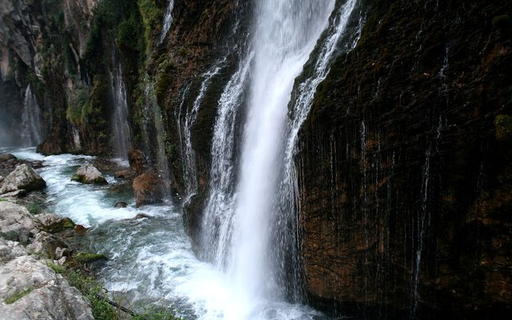
Kapuzbaşı ŞelaleleriKayseri · Waterfall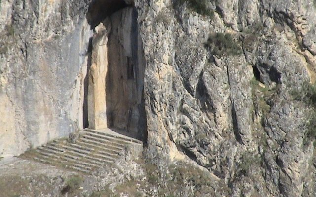
Kapılıkaya Kaya MezarıÇorum · Archaeological site Karabel Kaya Kabartmasıİzmir · Archaeological site
Karabel Kaya Kabartmasıİzmir · Archaeological site Karabük Safranbolu MuseumKarabük · Museum
Karabük Safranbolu MuseumKarabük · Museum Karacasu Ethnography MuseumAydın · Museum
Karacasu Ethnography MuseumAydın · Museum Karadeniz Ereğli MuseumZonguldak · Museum
Karadeniz Ereğli MuseumZonguldak · Museum Karagöl (Borçka)Artvin · Lake
Karagöl (Borçka)Artvin · Lake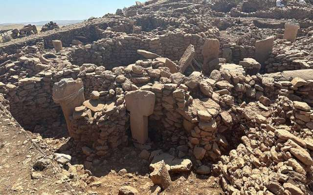
Karahantepe Archaeological SiteŞanlıurfa · Archaeological site Karain CaveAntalya · Natural site
Karain CaveAntalya · Natural site Ancient Settlement of KarakabaklıMersin · Archaeological site
Ancient Settlement of KarakabaklıMersin · Archaeological site Karakuş TümülüsüAdıyaman · Archaeological site
Karakuş TümülüsüAdıyaman · Archaeological site Karaman MuseumKaraman · Museum
Karaman MuseumKaraman · Museum Karanlık KanyonErzincan · Canyon
Karanlık KanyonErzincan · Canyon Karatay (Çini Eserler) MuseumKonya · Museum
Karatay (Çini Eserler) MuseumKonya · Museum Karatepe Aslantaş Museum and Archaeological SiteOsmaniye · Archaeological site
Karatepe Aslantaş Museum and Archaeological SiteOsmaniye · Archaeological site Karia WayMuğla · Hiking trail
Karia WayMuğla · Hiking trail Chora Church (Kariye Mosque)İstanbul · Religious building
Chora Church (Kariye Mosque)İstanbul · Religious building Ancient City of KarkamışGaziantep · Archaeological site
Ancient City of KarkamışGaziantep · Archaeological site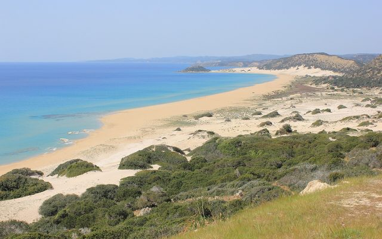
Karpas National Park and Golden Beachİskele · Natural site Kars Kafkas Cephesi Harp Tarihi MuseumKars · Museum
Kars Kafkas Cephesi Harp Tarihi MuseumKars · Museum Kars CastleKars · Castle & historic building
Kars CastleKars · Castle & historic building Kars MuseumKars · MuseumKartalkaya Kayak MerkeziBolu · Ski resort
Kars MuseumKars · MuseumKartalkaya Kayak MerkeziBolu · Ski resort Kartepe Kayak MerkeziKocaeli · Ski resort
Kartepe Kayak MerkeziKocaeli · Ski resort Kastabala Archaeological SiteOsmaniye · Archaeological site
Kastabala Archaeological SiteOsmaniye · Archaeological site Kastamonu MuseumKastamonu · Museum
Kastamonu MuseumKastamonu · Museum Kasımiye MadrasaMardin · Religious building
Kasımiye MadrasaMardin · Religious building Kaunos Archaeological SiteMuğla · Archaeological site
Kaunos Archaeological SiteMuğla · Archaeological site Kayseri Archaeology MuseumKayseri · Museum
Kayseri Archaeology MuseumKayseri · Museum Kayseri Atatürk House MuseumKayseri · Museum
Kayseri Atatürk House MuseumKayseri · Museum Kayseri CastleKayseri · Castle & historic building
Kayseri CastleKayseri · Castle & historic building Kaçkar DağlarıRize · Hiking trail
Kaçkar DağlarıRize · Hiking trail Kekova Sunken CityAntalya · Archaeological site
Kekova Sunken CityAntalya · Archaeological site Ancient City of KelenderisMersin · Archaeological site
Ancient City of KelenderisMersin · Archaeological site Kemal Sunal Museumİstanbul · MuseumKemaliye (Eğin) Tarihi KentiErzincan · Castle & historic building
Kemal Sunal Museumİstanbul · MuseumKemaliye (Eğin) Tarihi KentiErzincan · Castle & historic building Kemer Köprüsü (Seydikemer)Muğla · Castle & historic building
Kemer Köprüsü (Seydikemer)Muğla · Castle & historic building Ancient City of KeramosMuğla · Archaeological site
Ancient City of KeramosMuğla · Archaeological site Ancient City of KerkenesYozgat · Archaeological site
Ancient City of KerkenesYozgat · Archaeological site Keskin Sulu Mağara Underground CityKırıkkale · Underground city
Keskin Sulu Mağara Underground CityKırıkkale · Underground city Key Museum (Klasik Otomobil Müzesi)İzmir · Museum
Key Museum (Klasik Otomobil Müzesi)İzmir · Museum Kibyra Archaeological SiteBurdur · Archaeological siteKilis MuseumKilis · Museum
Kibyra Archaeological SiteBurdur · Archaeological siteKilis MuseumKilis · Museum Ancient City of KilistraKonya · Archaeological site
Ancient City of KilistraKonya · Archaeological site Kilitbahir Kale MuseumÇanakkale · Museum
Kilitbahir Kale MuseumÇanakkale · Museum Kilitbahir CastleÇanakkale · Castle & historic building
Kilitbahir CastleÇanakkale · Castle & historic building Ancient City of KitanauraAntalya · Archaeological site
Ancient City of KitanauraAntalya · Archaeological site Klaros Archaeological Siteİzmir · Archaeological site
Klaros Archaeological Siteİzmir · Archaeological site Klazomenai Archaeological Siteİzmir · Archaeological site
Klazomenai Archaeological Siteİzmir · Archaeological site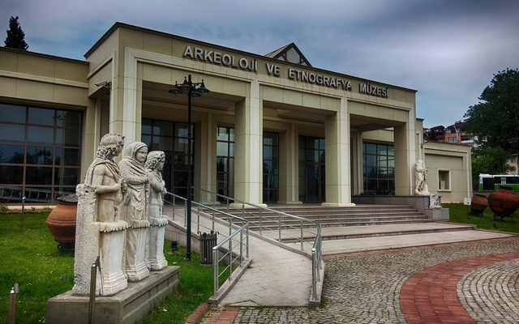
Kocaeli Archaeology MuseumKocaeli · Museum Ancient City of Kolophonİzmir · Archaeological siteAncient City of Komana PontikaTokat · Archaeological site
Ancient City of Kolophonİzmir · Archaeological siteAncient City of Komana PontikaTokat · Archaeological site Konuralp MuseumDüzce · Museum
Konuralp MuseumDüzce · Museum Konya Archaeology MuseumKonya · Museum
Konya Archaeology MuseumKonya · Museum Konya Atatürk House MuseumKonya · Museum
Konya Atatürk House MuseumKonya · Museum Konya Ethnography MuseumKonya · Museum
Konya Ethnography MuseumKonya · Museum Konya Panorama MuseumKonya · MuseumAncient City of KorydallaAntalya · Archaeological site
Konya Panorama MuseumKonya · MuseumAncient City of KorydallaAntalya · Archaeological site Korykos and Maiden's CastleMersin · Castle & historic building
Korykos and Maiden's CastleMersin · Castle & historic building Kossouth House MuseumKütahya · Museum
Kossouth House MuseumKütahya · Museum Kossuth House MuseumKütahya · Museum
Kossuth House MuseumKütahya · Museum Koza CaravanseraiBursa · Castle & historic buildingKral Mezarları Museum and Archaeological SiteGazimağusa · Archaeological site
Koza CaravanseraiBursa · Castle & historic buildingKral Mezarları Museum and Archaeological SiteGazimağusa · Archaeological site Ancient City of KremnaBurdur · Archaeological site
Ancient City of KremnaBurdur · Archaeological site Kubadabad PalaceKonya · Archaeological site
Kubadabad PalaceKonya · Archaeological site Kurtuluş Savaşı MuseumAnkara · Museum
Kurtuluş Savaşı MuseumAnkara · Museum Kuruköprü Anıt Müzesi and Geleneksel Adana HouseAdana · Museum
Kuruköprü Anıt Müzesi and Geleneksel Adana HouseAdana · Museum Kurşunlu Waterfall Nature ParkAntalya · Waterfall
Kurşunlu Waterfall Nature ParkAntalya · Waterfall Kuva-Yi Milliye MuseumBalıkesir · Museum
Kuva-Yi Milliye MuseumBalıkesir · Museum Ancient City of KyaneaiAntalya · Archaeological site
Ancient City of KyaneaiAntalya · Archaeological site Ancient City of Kymeİzmir · Archaeological site
Ancient City of Kymeİzmir · Archaeological site Ancient City of KyzikosBalıkesir · Archaeological site
Ancient City of KyzikosBalıkesir · Archaeological site Kâzım Karabekir Paşa Museumİstanbul · Museum
Kâzım Karabekir Paşa Museumİstanbul · Museum Köprülü Kanyon National ParkAntalya · Canyon
Köprülü Kanyon National ParkAntalya · Canyon Köprüpazar (Aspendos) BridgeAntalya · Castle & historic building
Köprüpazar (Aspendos) BridgeAntalya · Castle & historic building Lake KöyceğizMuğla · Lake
Lake KöyceğizMuğla · Lake Kültepe Archaeological SiteKayseri · Archaeological site
Kültepe Archaeological SiteKayseri · Archaeological site Kütahya CastleKütahya · Castle & historic buildingKütahya MuseumKütahya · Museum
Kütahya CastleKütahya · Castle & historic buildingKütahya MuseumKütahya · Museum Küçük Ayvasıl St. Anna ChurchTrabzon · Religious building
Küçük Ayvasıl St. Anna ChurchTrabzon · Religious building Küçüksu Pavilionİstanbul · Castle & historic building
Küçüksu Pavilionİstanbul · Castle & historic building Kırklareli MuseumKırklareli · MuseumKırşehir MuseumKırşehir · Museum
Kırklareli MuseumKırklareli · MuseumKırşehir MuseumKırşehir · Museum Kız Towerİstanbul · Castle & historic building
Kız Towerİstanbul · Castle & historic building KızılkuleAntalya · Castle & historic building
KızılkuleAntalya · Castle & historic building Labraunda Archaeological SiteMuğla · Archaeological site
Labraunda Archaeological SiteMuğla · Archaeological site Lagina Archaeological SiteMuğla · Archaeological site
Lagina Archaeological SiteMuğla · Archaeological site Lala Mustafa Paşa MosqueGazimağusa · Religious buildingAncient City of Lambousa (Lapithos)Girne · Archaeological siteAncient City of LamosAntalya · Archaeological site
Lala Mustafa Paşa MosqueGazimağusa · Religious buildingAncient City of Lambousa (Lapithos)Girne · Archaeological siteAncient City of LamosAntalya · Archaeological site Laodikeia Archaeological SiteDenizli · Archaeological site
Laodikeia Archaeological SiteDenizli · Archaeological site Lapidari MuseumLefkoşa · Museum
Lapidari MuseumLefkoşa · Museum Latife Hanım Köşkü Anı Houseİzmir · Museum
Latife Hanım Köşkü Anı Houseİzmir · Museum Latifoğlu MansionTokat · Museum
Latifoğlu MansionTokat · Museum Ancient City of Lebedosİzmir · Archaeological site
Ancient City of Lebedosİzmir · Archaeological site Likya Uygarlıkları Müzesi and Andrıake Archaeological SiteAntalya · Archaeological site
Likya Uygarlıkları Müzesi and Andrıake Archaeological SiteAntalya · Archaeological site Likya WayMuğla · Hiking trail
Likya WayMuğla · Hiking trail Limyra Archaeological SiteAntalya · Archaeological siteLivapaşa Mansion Ethnography MuseumKastamonu · Museum
Limyra Archaeological SiteAntalya · Archaeological siteLivapaşa Mansion Ethnography MuseumKastamonu · Museum Ancient City of LorymaMuğla · Archaeological site
Ancient City of LorymaMuğla · Archaeological site Lausanne Monument and Karaağaç StationEdirne · Castle & historic building
Lausanne Monument and Karaağaç StationEdirne · Castle & historic building Lületaşı MuseumEskişehir · MuseumMaden MuseumZonguldak · Museum
Lületaşı MuseumEskişehir · MuseumMaden MuseumZonguldak · Museum Ancient City of MagarsusAdana · Archaeological site
Ancient City of MagarsusAdana · Archaeological site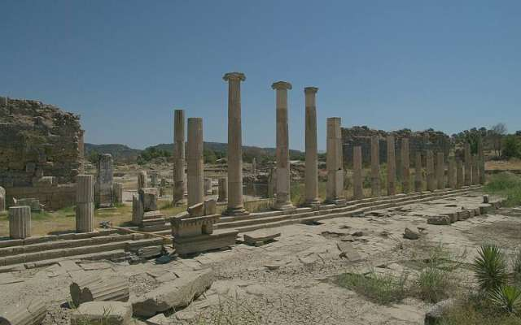
Magnesia Archaeological SiteAydın · Archaeological site Mahmut Bey MosqueKastamonu · Religious building
Mahmut Bey MosqueKastamonu · Religious building Malabadi BridgeDiyarbakır · Castle & historic buildingMalatya Atatürk Anı House and Etnoğrafya MuseumMalatya · Museum
Malabadi BridgeDiyarbakır · Castle & historic buildingMalatya Atatürk Anı House and Etnoğrafya MuseumMalatya · Museum Malatya MuseumMalatya · MuseumMalazgirt MuseumMuş · Museum
Malatya MuseumMalatya · MuseumMalazgirt MuseumMuş · Museum Mamure CastleMersin · Castle & historic building
Mamure CastleMersin · Castle & historic building Manavgat WaterfallAntalya · Waterfall
Manavgat WaterfallAntalya · Waterfall Akhisar Museum and Tepe Cemetery (Thyatira)Manisa · Archaeological site
Akhisar Museum and Tepe Cemetery (Thyatira)Manisa · Archaeological site Manisa MuseumManisa · Museum
Manisa MuseumManisa · Museum Mardin MuseumMardin · MuseumMarmaris MuseumMuğla · Museum
Mardin MuseumMardin · MuseumMarmaris MuseumMuğla · Museum Maslak Kasırlarıİstanbul · Castle & historic building
Maslak Kasırlarıİstanbul · Castle & historic building Masumiyet Museumİstanbul · MuseumMazı Underground CityNevşehir · Underground cityMaşat MoundTokat · Archaeological siteMehmet Akif Ersoy Edebiyat Müze KütüphanesiAnkara · Museum
Masumiyet Museumİstanbul · MuseumMazı Underground CityNevşehir · Underground cityMaşat MoundTokat · Archaeological siteMehmet Akif Ersoy Edebiyat Müze KütüphanesiAnkara · Museum Mehmet Akif Ersoy Hatıra Houseİstanbul · MuseumMehmet Cabir Alper Archaeology MuseumBatman · Museum
Mehmet Akif Ersoy Hatıra Houseİstanbul · MuseumMehmet Cabir Alper Archaeology MuseumBatman · Museum Lake MekeKonya · Lake
Lake MekeKonya · Lake Melen ÇayıDüzce · Rafting
Melen ÇayıDüzce · Rafting Meriç BridgeEdirne · Castle & historic building
Meriç BridgeEdirne · Castle & historic building Mersin Atatürk House MuseumMersin · Museum
Mersin Atatürk House MuseumMersin · Museum Maiden's Castle (Kızkalesi)Mersin · Castle & historic building
Maiden's Castle (Kızkalesi)Mersin · Castle & historic building Mersin MuseumMersin · MuseumMersin Tarsus MuseumMersin · Museum
Mersin MuseumMersin · MuseumMersin Tarsus MuseumMersin · Museum Meryem Ana Houseİzmir · Religious building
Meryem Ana Houseİzmir · Religious building Meryem Ana MonasteryGiresun · Religious building
Meryem Ana MonasteryGiresun · Religious building Metropolis Archaeological Siteİzmir · Archaeological site
Metropolis Archaeological Siteİzmir · Archaeological site Mevlana MuseumKonya · Museum
Mevlana MuseumKonya · Museum Mevlevi Tekke MuseumLefkoşa · MuseumMevlevihane MuseumAntalya · Museum
Mevlevi Tekke MuseumLefkoşa · MuseumMevlevihane MuseumAntalya · Museum Mezgitkale Tomb MonumentMersin · Archaeological site
Mezgitkale Tomb MonumentMersin · Archaeological site Mher Kapısı (Meher Kapı)Van · Archaeological site
Mher Kapısı (Meher Kapı)Van · Archaeological site Midas Yazılıkaya Archaeological SiteEskişehir · Archaeological site
Midas Yazılıkaya Archaeological SiteEskişehir · Archaeological site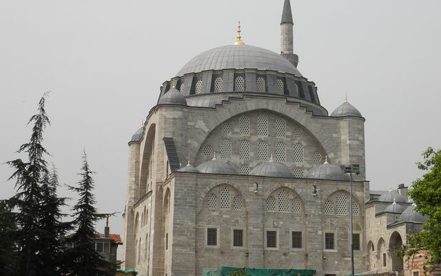
Mihrimah Sultan Mosque (Edirnekapı)İstanbul · Religious building Beçin Castle and Archaeological Site, MilasMuğla · Archaeological site
Beçin Castle and Archaeological Site, MilasMuğla · Archaeological site Milas Euromos Archaeological SiteMuğla · Archaeological siteMilas Taş Eserler MuseumMuğla · MuseumMilas Uzunyuva (Hekatomnos Anıt Mezarı)Muğla · Archaeological site
Milas Euromos Archaeological SiteMuğla · Archaeological siteMilas Taş Eserler MuseumMuğla · MuseumMilas Uzunyuva (Hekatomnos Anıt Mezarı)Muğla · Archaeological site Uzunyuva Monumental Tomb and Museum (Hekatomneion), MilasMuğla · Archaeological site
Uzunyuva Monumental Tomb and Museum (Hekatomneion), MilasMuğla · Archaeological site Milas İassos Balık Pazarı MuseumMuğla · Museum
Milas İassos Balık Pazarı MuseumMuğla · Museum Milet MuseumAydın · Museum
Milet MuseumAydın · Museum Milet Archaeological SiteAydın · Archaeological site
Milet Archaeological SiteAydın · Archaeological site Mimar Sinan and City MuseumKayseri · Museum
Mimar Sinan and City MuseumKayseri · Museum Miniatürkİstanbul · Museum
Miniatürkİstanbul · Museum Ancient City of Misis (Mopsuestia)Adana · Archaeological site
Ancient City of Misis (Mopsuestia)Adana · Archaeological site Misis Mosaic MuseumAdana · Museum
Misis Mosaic MuseumAdana · Museum Mke Sanayi and Teknoloji MuseumAnkara · Museum
Mke Sanayi and Teknoloji MuseumAnkara · Museum Mor Gabriel MonasteryMardin · Religious buildingMta Şehvar Doğa Tarihi MuseumAnkara · MuseumMucur Underground CityKırşehir · Underground city
Mor Gabriel MonasteryMardin · Religious buildingMta Şehvar Doğa Tarihi MuseumAnkara · MuseumMucur Underground CityKırşehir · Underground city Mudanya Mütareke House MuseumBursa · Museum
Mudanya Mütareke House MuseumBursa · Museum Muradiye ComplexBursa · Religious building
Muradiye ComplexBursa · Religious building Muradiye WaterfallVan · Waterfall
Muradiye WaterfallVan · Waterfall Mustafapaşa (Sinasos) KöyüNevşehir · Castle & historic building
Mustafapaşa (Sinasos) KöyüNevşehir · Castle & historic building Muğla Bodrum Mausoleium Monument MuseumMuğla · Museum
Muğla Bodrum Mausoleium Monument MuseumMuğla · Museum Muğla Knidos Archaeological SiteMuğla · Archaeological site
Muğla Knidos Archaeological SiteMuğla · Archaeological site Muğla MuseumMuğla · MuseumMuş MuseumMuş · Museum
Muğla MuseumMuğla · MuseumMuş MuseumMuş · Museum Ancient City of MyndosMuğla · Archaeological site
Ancient City of MyndosMuğla · Archaeological site Myra Archaeological SiteAntalya · Archaeological site
Myra Archaeological SiteAntalya · Archaeological site Ancient City of MyusAydın · Archaeological site
Ancient City of MyusAydın · Archaeological site Müze Gazhaneİstanbul · MuseumNakoleia and Seyitgazi ComplexEskişehir · Religious building
Müze Gazhaneİstanbul · MuseumNakoleia and Seyitgazi ComplexEskişehir · Religious building Namazgâh Tabyası MuseumÇanakkale · Museum
Namazgâh Tabyası MuseumÇanakkale · Museum Namrun CastleMersin · Castle & historic buildingNamık Kemal House MuseumTekirdağ · Museum
Namrun CastleMersin · Castle & historic buildingNamık Kemal House MuseumTekirdağ · Museum Namık Kemal Zindanı and MuseumGazimağusa · MuseumAncient City of NeandreiaÇanakkale · Archaeological site
Namık Kemal Zindanı and MuseumGazimağusa · MuseumAncient City of NeandreiaÇanakkale · Archaeological site Necmi İğe House Ethnography MuseumEdirne · Museum
Necmi İğe House Ethnography MuseumEdirne · Museum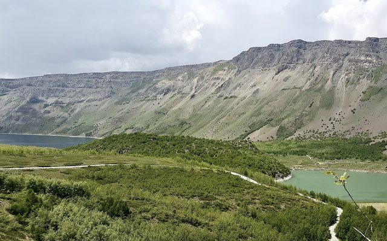
Lake Nemrut KraterBitlis · LakeNevşehir Hacıbektaş Arkeoloji and Ethnography MuseumNevşehir · MuseumNevşehir Hacıbektaş Atatürk House MuseumNevşehir · Museum Nevşehir MuseumNevşehir · MuseumNilüfer Hatun İmareti Türk İslam Eserleri MuseumBursa · MuseumNiğde Andaval Archaeological SiteNiğde · Archaeological site
Nevşehir MuseumNevşehir · MuseumNilüfer Hatun İmareti Türk İslam Eserleri MuseumBursa · MuseumNiğde Andaval Archaeological SiteNiğde · Archaeological site Niğde MuseumNiğde · Museum
Niğde MuseumNiğde · Museum Ancient City of Notionİzmir · Archaeological site
Ancient City of Notionİzmir · Archaeological site Nymphaion (Nif) Laskaris Palaceİzmir · Castle & historic building
Nymphaion (Nif) Laskaris Palaceİzmir · Castle & historic building Nysa Sultanhisar Archaeological SiteAydın · Archaeological site
Nysa Sultanhisar Archaeological SiteAydın · Archaeological site Odtü Bilim and Teknoloji MuseumAnkara · Museum
Odtü Bilim and Teknoloji MuseumAnkara · Museum Odunpazarı Modern MüzeEskişehir · MuseumAncient City of OinoandaMuğla · Archaeological site
Odunpazarı Modern MüzeEskişehir · MuseumAncient City of OinoandaMuğla · Archaeological site Ancient City of OlbaMersin · Archaeological site
Ancient City of OlbaMersin · Archaeological site Oluz MoundAmasya · Archaeological site
Oluz MoundAmasya · Archaeological site Olympos Archaeological SiteAntalya · Archaeological site
Olympos Archaeological SiteAntalya · Archaeological site On Gözlü (Dicle) BridgeDiyarbakır · Castle & historic buildingOrdu MuseumOrdu · Museum
On Gözlü (Dicle) BridgeDiyarbakır · Castle & historic buildingOrdu MuseumOrdu · Museum Orhan Kemal Museumİstanbul · Museum
Orhan Kemal Museumİstanbul · Museum Osman Hamdi Bey MuseumKocaeli · MuseumOsmaniye MuseumOsmaniye · MuseumOsmanlı House MuseumBursa · Museum
Osman Hamdi Bey MuseumKocaeli · MuseumOsmaniye MuseumOsmaniye · MuseumOsmanlı House MuseumBursa · Museum Othello CastleGazimağusa · Castle & historic building
Othello CastleGazimağusa · Castle & historic building Oylum MoundKilis · Archaeological site
Oylum MoundKilis · Archaeological site Palandöken Kayak MerkeziErzurum · Ski resort
Palandöken Kayak MerkeziErzurum · Ski resort Panorama 1453 Tarih Museumİstanbul · Museum
Panorama 1453 Tarih Museumİstanbul · Museum Ancient City of ParionÇanakkale · Archaeological site
Ancient City of ParionÇanakkale · Archaeological site Patara Archaeological SiteAntalya · Archaeological site
Patara Archaeological SiteAntalya · Archaeological site Ancient City of PedasaMuğla · Archaeological siteAncient City of PednelissosAntalya · Archaeological site
Ancient City of PedasaMuğla · Archaeological siteAncient City of PednelissosAntalya · Archaeological site Pera Museumİstanbul · Museum
Pera Museumİstanbul · Museum Perge Archaeological SiteAntalya · Archaeological siteAncient City of PerpereneBalıkesir · Archaeological site
Perge Archaeological SiteAntalya · Archaeological siteAncient City of PerpereneBalıkesir · Archaeological site Perre Archaeological SiteAdıyaman · Archaeological site
Perre Archaeological SiteAdıyaman · Archaeological site Pessinus Archaeological SiteEskişehir · Archaeological site
Pessinus Archaeological SiteEskişehir · Archaeological site Phaselis Archaeological SiteAntalya · Archaeological site
Phaselis Archaeological SiteAntalya · Archaeological site Ancient City of PhellosAntalya · Archaeological site
Ancient City of PhellosAntalya · Archaeological site Ancient City of Phokaia (Foça)İzmir · Archaeological site
Ancient City of Phokaia (Foça)İzmir · Archaeological site Pierre Loti Museumİstanbul · Museum
Pierre Loti Museumİstanbul · Museum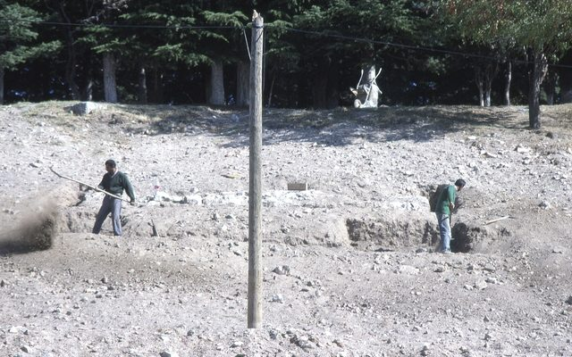
Ancient City of Pisidia AntiokheiaIsparta · Archaeological siteAncient City of PompeiopolisKastamonu · Archaeological site Priene Archaeological SiteAydın · Archaeological site
Priene Archaeological SiteAydın · Archaeological site Ancient City of Prusias ad Hypium (Konuralp)Düzce · Archaeological site
Ancient City of Prusias ad Hypium (Konuralp)Düzce · Archaeological site Pydnai CastleMuğla · Archaeological site
Pydnai CastleMuğla · Archaeological site Rahmi M. Koç Museumİstanbul · Museum
Rahmi M. Koç Museumİstanbul · Museum Rami Kışlası (Rami Kütüphanesi)İstanbul · Castle & historic building
Rami Kışlası (Rami Kütüphanesi)İstanbul · Castle & historic building Resim Heykel MuseumAnkara · Museum
Resim Heykel MuseumAnkara · Museum Rezan Has Museumİstanbul · Museum
Rezan Has Museumİstanbul · Museum Ancient City of RhodiapolisAntalya · Archaeological site
Ancient City of RhodiapolisAntalya · Archaeological site Rize Atatürk House MuseumRize · Museum
Rize Atatürk House MuseumRize · Museum Rize MuseumRize · Museum
Rize MuseumRize · Museum Roman Baths of AnkaraAnkara · Archaeological site
Roman Baths of AnkaraAnkara · Archaeological site Rumelihisarı Fortressİstanbul · Castle & historic building
Rumelihisarı Fortressİstanbul · Castle & historic building Rumkale Archaeological SiteGaziantep · Archaeological site
Rumkale Archaeological SiteGaziantep · Archaeological site Rüstem Paşa Mosqueİstanbul · Religious building
Rüstem Paşa Mosqueİstanbul · Religious building Sadberk Hanım Museumİstanbul · Museum
Sadberk Hanım Museumİstanbul · Museum Sagalassos Archaeological SiteBurdur · Archaeological site
Sagalassos Archaeological SiteBurdur · Archaeological site Sahabiye MadrasaKayseri · Religious building
Sahabiye MadrasaKayseri · Religious building Sait Faik Abasıyanık Museumİstanbul · Museum
Sait Faik Abasıyanık Museumİstanbul · Museum Sakarya MuseumSakarya · Museum
Sakarya MuseumSakarya · Museum Saklıkent CanyonMuğla · Canyon
Saklıkent CanyonMuğla · Canyon Sakıp Sabancı Mardin City MuseumMardin · Museum
Sakıp Sabancı Mardin City MuseumMardin · Museum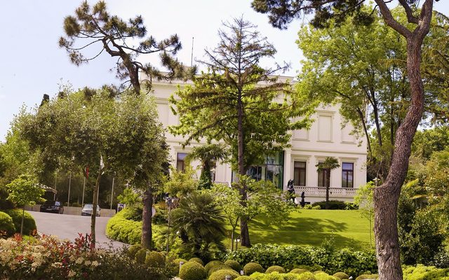
Sakıp Sabancı Museumİstanbul · Museum Salamis Archaeological SiteGazimağusa · Archaeological site
Salamis Archaeological SiteGazimağusa · Archaeological site Lake SaldaBurdur · Lake
Lake SaldaBurdur · Lake Salt Galataİstanbul · Museum
Salt Galataİstanbul · Museum Samsun MuseumSamsun · Museum
Samsun MuseumSamsun · Museum Lake SapancaSakarya · Lake
Lake SapancaSakarya · Lake Saratlı Kırkgöz Underground CityAksaray · Underground city
Saratlı Kırkgöz Underground CityAksaray · Underground city Sardes Archaeological SiteManisa · Archaeological site
Sardes Archaeological SiteManisa · Archaeological site Sarissa (Kuşaklı) Hitit KentiSivas · Archaeological site
Sarissa (Kuşaklı) Hitit KentiSivas · Archaeological site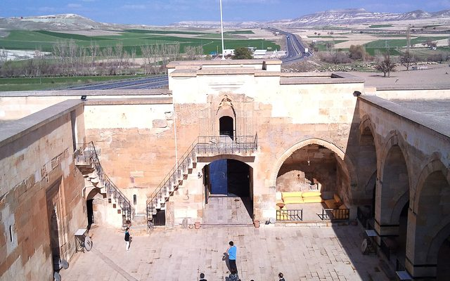
Sarıhan CaravanseraiNevşehir · Castle & historic building Sarıkamış Kayak MerkeziKars · Ski resort
Sarıkamış Kayak MerkeziKars · Ski resort Sarıkaya Roma BathYozgat · Archaeological site
Sarıkaya Roma BathYozgat · Archaeological site Ancient City of SatalaGümüşhane · Archaeological siteAncient City of SebastopolisTokat · Archaeological site
Ancient City of SatalaGümüşhane · Archaeological siteAncient City of SebastopolisTokat · Archaeological site Ancient City of SebedaAntalya · Archaeological site
Ancient City of SebedaAntalya · Archaeological site Sedir Adası Archaeological SiteMuğla · Archaeological site
Sedir Adası Archaeological SiteMuğla · Archaeological site Seka Kâğıt MuseumKocaeli · Museum
Seka Kâğıt MuseumKocaeli · Museum Ancient City of Seleukeia (Pamfilya)Antalya · Archaeological site
Ancient City of Seleukeia (Pamfilya)Antalya · Archaeological site Ancient City of SelgeAntalya · Archaeological site
Ancient City of SelgeAntalya · Archaeological site Selimiye MosqueLefkoşa · Religious building
Selimiye MosqueLefkoşa · Religious building Ancient City of SelinusAntalya · Archaeological site
Ancient City of SelinusAntalya · Archaeological site Side MuseumAntalya · Museum
Side MuseumAntalya · Museum Side Archaeological SiteAntalya · Archaeological site
Side Archaeological SiteAntalya · Archaeological site Ancient City of SidymaMuğla · Archaeological siteGreat Mosque of SiirtSiirt · Religious building
Ancient City of SidymaMuğla · Archaeological siteGreat Mosque of SiirtSiirt · Religious building Silifke Astım CaveMersin · Natural site
Silifke Astım CaveMersin · Natural site Silifke Atatürk House and Ethnography MuseumMersin · Museum
Silifke Atatürk House and Ethnography MuseumMersin · Museum Silifke Ayatekla Archaeological SiteMersin · Archaeological site
Silifke Ayatekla Archaeological SiteMersin · Archaeological site Caves of Heaven and HellMersin · Natural site
Caves of Heaven and HellMersin · Natural site Silifke CastleMersin · Castle & historic building
Silifke CastleMersin · Castle & historic building Silifke MuseumMersin · Museum
Silifke MuseumMersin · Museum Silifke Narlıkuyu Mosaic MuseumMersin · Museum
Silifke Narlıkuyu Mosaic MuseumMersin · Museum Sille and Aya Elenia ChurchKonya · Religious building
Sille and Aya Elenia ChurchKonya · Religious building Ancient City of SillyonAntalya · Archaeological siteSilvan Atatürk House MuseumDiyarbakır · Museum
Ancient City of SillyonAntalya · Archaeological siteSilvan Atatürk House MuseumDiyarbakır · Museum Simena Archaeological SiteAntalya · Archaeological siteSinop Arslantorunlar Ethnography MuseumSinop · Museum
Simena Archaeological SiteAntalya · Archaeological siteSinop Arslantorunlar Ethnography MuseumSinop · Museum Sinop MuseumSinop · Museum
Sinop MuseumSinop · Museum Sirkeli Höyük and the Muwatalli ReliefAdana · Archaeological site
Sirkeli Höyük and the Muwatalli ReliefAdana · Archaeological site Sivas Archaeology MuseumSivas · Museum
Sivas Archaeology MuseumSivas · Museum Sivas Atatürk and Kongre MuseumSivas · Museum
Sivas Atatürk and Kongre MuseumSivas · Museum Sobesos Antik Kenti (Şahinefendi)Nevşehir · Archaeological siteSobessos Archaeological SiteNevşehir · Archaeological siteSofraz Anıt MezarıAdıyaman · Archaeological site
Sobesos Antik Kenti (Şahinefendi)Nevşehir · Archaeological siteSobessos Archaeological SiteNevşehir · Archaeological siteSofraz Anıt MezarıAdıyaman · Archaeological site Softa CastleMersin · Castle & historic building
Softa CastleMersin · Castle & historic building Ancient City of Soli PompeiopolisMersin · Archaeological site
Ancient City of Soli PompeiopolisMersin · Archaeological site Soli Archaeological SiteLefke · Archaeological siteAncient City of SoğmatarŞanlıurfa · Archaeological site
Soli Archaeological SiteLefke · Archaeological siteAncient City of SoğmatarŞanlıurfa · Archaeological site St. Antuan Churchİstanbul · Religious building
St. Antuan Churchİstanbul · Religious building St. Barnabas MonasteryGazimağusa · Religious building
St. Barnabas MonasteryGazimağusa · Religious building St. Hilarion CastleGirne · Castle & historic building
St. Hilarion CastleGirne · Castle & historic building St. Pierre Monument MuseumHatay · Museum
St. Pierre Monument MuseumHatay · Museum St. Simon MonasteryHatay · Religious building
St. Simon MonasteryHatay · Religious building Stratonikeia Archaeological SiteMuğla · Archaeological site
Stratonikeia Archaeological SiteMuğla · Archaeological site Sultan Bayezid II Complex Health MuseumEdirne · Museum
Sultan Bayezid II Complex Health MuseumEdirne · Museum Blue Mosque (Sultan Ahmed Mosque)İstanbul · Religious building
Blue Mosque (Sultan Ahmed Mosque)İstanbul · Religious building Sultanahmet Meydanı (Hipodrom)İstanbul · Archaeological site
Sultanahmet Meydanı (Hipodrom)İstanbul · Archaeological site Sultanhanı CaravanseraiAksaray · Castle & historic buildingSultanlar WayEdirne · Hiking trail
Sultanhanı CaravanseraiAksaray · Castle & historic buildingSultanlar WayEdirne · Hiking trail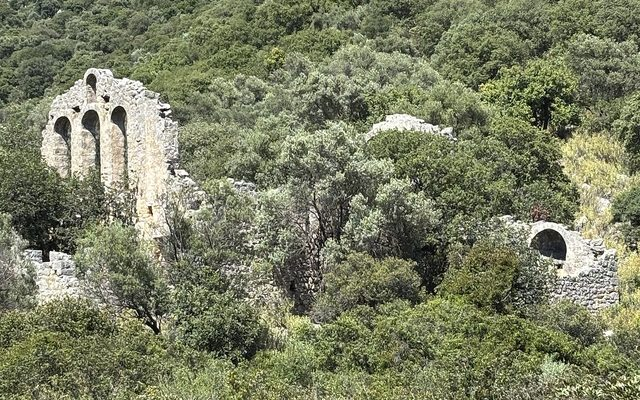
Ancient City of SuraAntalya · Archaeological site Surp Giragos Ermeni ChurchDiyarbakır · Religious building
Surp Giragos Ermeni ChurchDiyarbakır · Religious building Suuçtu WaterfallBursa · Waterfall
Suuçtu WaterfallBursa · Waterfall Söğüt Ertuğrul Gazi MuseumBilecik · Museum
Söğüt Ertuğrul Gazi MuseumBilecik · Museum Süleymaniye Mosqueİstanbul · Religious building
Süleymaniye Mosqueİstanbul · Religious building Sümela MonasteryTrabzon · Religious buildingTahtakuşlar Ethnography MuseumBalıkesir · MuseumTaksiyarhis Monument MuseumBalıkesir · Museum
Sümela MonasteryTrabzon · Religious buildingTahtakuşlar Ethnography MuseumBalıkesir · MuseumTaksiyarhis Monument MuseumBalıkesir · Museum Ancient City of TapureliMersin · Archaeological site
Ancient City of TapureliMersin · Archaeological site Tarihi CezaeviSinop · Castle & historic building
Tarihi CezaeviSinop · Castle & historic building Tarsus Antik Roma WayMersin · Archaeological site
Tarsus Antik Roma WayMersin · Archaeological site Tarsus GözlükuleMersin · Archaeological site
Tarsus GözlükuleMersin · Archaeological site Cleopatra's Gate and Ancient Road, TarsusMersin · Archaeological site
Cleopatra's Gate and Ancient Road, TarsusMersin · Archaeological site Tarsus St. Paul Monument MuseumMersin · Museum
Tarsus St. Paul Monument MuseumMersin · Museum Tarsus St. Paul KuyusuMersin · Religious building
Tarsus St. Paul KuyusuMersin · Religious building Tatlarin Underground CityNevşehir · Underground cityTayfun Talipoğlu Daktilo MuseumEskişehir · Museum
Tatlarin Underground CityNevşehir · Underground cityTayfun Talipoğlu Daktilo MuseumEskişehir · Museum Tazı CanyonAntalya · Canyon
Tazı CanyonAntalya · Canyon TaşköprüAdana · Castle & historic building
TaşköprüAdana · Castle & historic building Taşucu Aslan Eyce Amfora MuseumMersin · Museum
Taşucu Aslan Eyce Amfora MuseumMersin · Museum Taşucu Atatürk HouseMersin · Museum
Taşucu Atatürk HouseMersin · Museum Tcdd Açık Hava Buharlı Lokomotif MuseumAnkara · Museum
Tcdd Açık Hava Buharlı Lokomotif MuseumAnkara · Museum Tcdd Malıköy Tren İstasyonu MuseumAnkara · Museum
Tcdd Malıköy Tren İstasyonu MuseumAnkara · Museum Ancient City of TeimiussaAntalya · Archaeological siteTekirdağ Muratlı Atatürk House MuseumTekirdağ · Museum
Ancient City of TeimiussaAntalya · Archaeological siteTekirdağ Muratlı Atatürk House MuseumTekirdağ · Museum Tekirdağ MuseumTekirdağ · Museum
Tekirdağ MuseumTekirdağ · Museum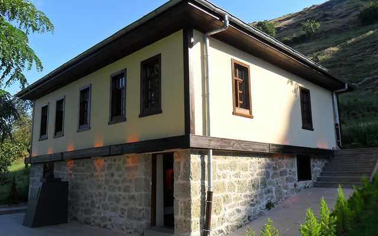
Tekkeköy MağaralarıSamsun · Archaeological site Teos Archaeological Siteİzmir · Archaeological site
Teos Archaeological Siteİzmir · Archaeological site Termessos Archaeological SiteAntalya · Archaeological site
Termessos Archaeological SiteAntalya · Archaeological site Theodosius Forumu Kalıntılarıİstanbul · Archaeological site
Theodosius Forumu Kalıntılarıİstanbul · Archaeological site Theodosius Surlarıİstanbul · Castle & historic buildingTilbaşar CastleGaziantep · Castle & historic building
Theodosius Surlarıİstanbul · Castle & historic buildingTilbaşar CastleGaziantep · Castle & historic building Tilmen MoundGaziantep · Archaeological site
Tilmen MoundGaziantep · Archaeological site Tire Museumİzmir · Museum
Tire Museumİzmir · Museum Titus Tüneli (Vespasianus Tüneli)Hatay · Archaeological site
Titus Tüneli (Vespasianus Tüneli)Hatay · Archaeological site Tofaş Anadolu Arabaları MuseumBursa · MuseumTokat Atatürk House and Ethnography MuseumTokat · Museum
Tofaş Anadolu Arabaları MuseumBursa · MuseumTokat Atatürk House and Ethnography MuseumTokat · Museum Tokat MuseumTokat · Museum
Tokat MuseumTokat · Museum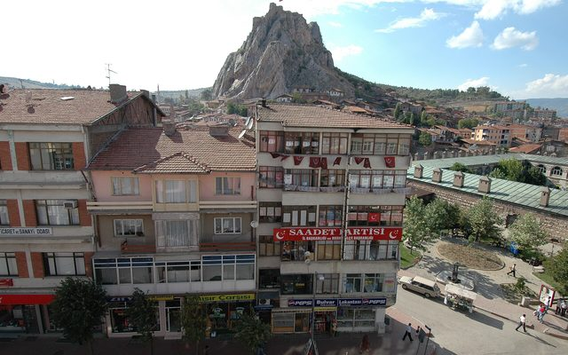
Tokat TaşhanTokat · Castle & historic buildingTopkapı Palaceİstanbul · Castle & historic building Tortum WaterfallErzurum · Waterfall
Tortum WaterfallErzurum · Waterfall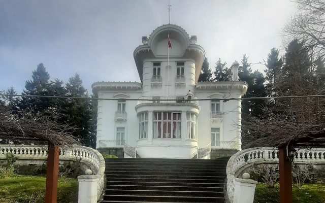
Trabzon Atatürk PavilionTrabzon · Museum Trabzon Ayasofya MosqueTrabzon · Religious building
Trabzon Ayasofya MosqueTrabzon · Religious building Trabzon Museum (Kostaki Mansion)Trabzon · Museum
Trabzon Museum (Kostaki Mansion)Trabzon · Museum Ancient City of TralleisAydın · Archaeological site
Ancient City of TralleisAydın · Archaeological site Ancient City of TrebennaAntalya · Archaeological site
Ancient City of TrebennaAntalya · Archaeological site Troy MuseumÇanakkale · Museum
Troy MuseumÇanakkale · Museum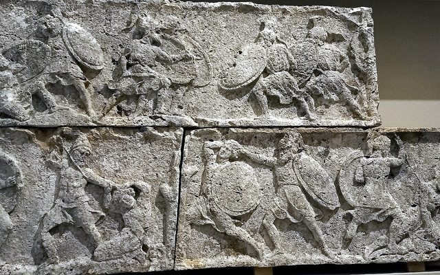
Ancient City of TrysaAntalya · Archaeological site Tunceli MuseumTunceli · Museum
Tunceli MuseumTunceli · Museum Lake TuzAksaray · Lake
Lake TuzAksaray · Lake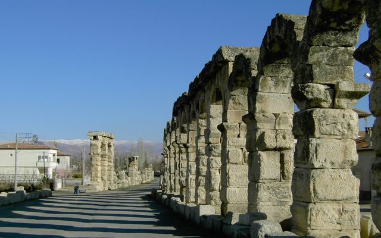
Ancient Tyana and Roman Pool (Kemerhisar)Niğde · Archaeological site Ancient City of TyberissosAntalya · Archaeological site
Ancient City of TyberissosAntalya · Archaeological site Türk Hava Kurumu MuseumAnkara · Museum
Türk Hava Kurumu MuseumAnkara · Museum Türk Vakıf Hat Sanatları Museumİstanbul · Museum
Türk Vakıf Hat Sanatları Museumİstanbul · Museum Türk and İslam Eserleri Museumİstanbul · MuseumTürk İslam Eserleri MuseumEdirne · Museum
Türk and İslam Eserleri Museumİstanbul · MuseumTürk İslam Eserleri MuseumEdirne · Museum Türk İslam Eserleri and Ethnography MuseumErzurum · Museum
Türk İslam Eserleri and Ethnography MuseumErzurum · Museum Türkiye İş Bankası Museumİstanbul · Museum
Türkiye İş Bankası Museumİstanbul · Museum Ulubey Canyon Nature ParkUşak · CanyonUluborlu MuseumIsparta · Museum
Ulubey Canyon Nature ParkUşak · CanyonUluborlu MuseumIsparta · Museum Ulucanlar Cezaevi MuseumAnkara · Museum
Ulucanlar Cezaevi MuseumAnkara · Museum Uludağ Kayak MerkeziBursa · Ski resort
Uludağ Kayak MerkeziBursa · Ski resort Uzuncaburç Archaeological SiteMersin · Archaeological site
Uzuncaburç Archaeological SiteMersin · Archaeological site UzungölTrabzon · Lake
UzungölTrabzon · Lake Uşak MuseumUşak · Museum
Uşak MuseumUşak · Museum Valla CanyonKastamonu · Canyon
Valla CanyonKastamonu · Canyon Lake VanVan · Lake
Lake VanVan · Lake Van CastleVan · Castle & historic building
Van CastleVan · Castle & historic building Van MuseumVan · Museum
Van MuseumVan · Museum Varda BridgeAdana · Castle & historic buildingVize Ayasofya (Gazi Süleyman Paşa) MosqueKırklareli · Religious building
Varda BridgeAdana · Castle & historic buildingVize Ayasofya (Gazi Süleyman Paşa) MosqueKırklareli · Religious building Vouni PalaceLefke · Archaeological site
Vouni PalaceLefke · Archaeological site Yahya Kemal Museumİstanbul · Museum
Yahya Kemal Museumİstanbul · Museum Yalvaç MuseumIsparta · Museum
Yalvaç MuseumIsparta · Museum Yanartaş (Khimaira)Antalya · Natural site
Yanartaş (Khimaira)Antalya · Natural site Yanıkhan Archaeological SiteMersin · Archaeological site
Yanıkhan Archaeological SiteMersin · Archaeological site Yedigöller National ParkBolu · Lake
Yedigöller National ParkBolu · Lake Yedikule Fortressİstanbul · Castle & historic building
Yedikule Fortressİstanbul · Castle & historic building Yenişehir Şemaki House MuseumBursa · Museum
Yenişehir Şemaki House MuseumBursa · Museum Basilica Cisternİstanbul · Castle & historic building
Basilica Cisternİstanbul · Castle & historic building Yesemek Archaeological SiteGaziantep · Archaeological site
Yesemek Archaeological SiteGaziantep · Archaeological site Yeşilhisar Soğanlı Archaeological SiteKayseri · Archaeological site
Yeşilhisar Soğanlı Archaeological SiteKayseri · Archaeological site Yeşilova Moundİzmir · Archaeological site
Yeşilova Moundİzmir · Archaeological site Yivli Minare MosqueAntalya · Religious building
Yivli Minare MosqueAntalya · Religious building Yozgat MuseumYozgat · Museum
Yozgat MuseumYozgat · Museum Yumuktepe MoundMersin · Archaeological site
Yumuktepe MoundMersin · Archaeological site Yörük Ali Efe House MuseumAydın · Museum
Yörük Ali Efe House MuseumAydın · Museum Yörük KöyüKarabük · Castle & historic building
Yörük KöyüKarabük · Castle & historic building Walking Pavilion (Yürüyen Köşk)Yalova · Museum
Walking Pavilion (Yürüyen Köşk)Yalova · Museum YılankaleAdana · Castle & historic building
YılankaleAdana · Castle & historic building Yıldız Porselen Fabrikasıİstanbul · Museum
Yıldız Porselen Fabrikasıİstanbul · Museum Yıldız Palaceİstanbul · Castle & historic building
Yıldız Palaceİstanbul · Castle & historic building Yılmaz Büyükerşen Balmumu Heykeller MuseumEskişehir · Museum
Yılmaz Büyükerşen Balmumu Heykeller MuseumEskişehir · Museum Zafer MuseumAfyonkarahisar · Museum
Zafer MuseumAfyonkarahisar · Museum Zamantı IrmağıAdana · Rafting
Zamantı IrmağıAdana · Rafting Zazadin CaravanseraiKonya · Castle & historic building
Zazadin CaravanseraiKonya · Castle & historic building Zeki Müren Sanat MuseumMuğla · Museum
Zeki Müren Sanat MuseumMuğla · Museum Zengibar Kalesi (Isaura)Konya · Archaeological site
Zengibar Kalesi (Isaura)Konya · Archaeological site Zerzevan CastleDiyarbakır · Archaeological site
Zerzevan CastleDiyarbakır · Archaeological site Zeugma Mosaic MuseumGaziantep · Museum
Zeugma Mosaic MuseumGaziantep · Museum Zeugma Archaeological SiteGaziantep · Archaeological site
Zeugma Archaeological SiteGaziantep · Archaeological site ZilkaleRize · Castle & historic building
ZilkaleRize · Castle & historic building Zinciriye MadrasaDiyarbakır · Religious building
Zinciriye MadrasaDiyarbakır · Religious building Zincirli Höyük (Sam'al)Gaziantep · Archaeological site
Zincirli Höyük (Sam'al)Gaziantep · Archaeological site Ziya Gökalp MuseumDiyarbakır · Museum
Ziya Gökalp MuseumDiyarbakır · Museum santralistanbul Enerji Museumİstanbul · Museum
santralistanbul Enerji Museumİstanbul · Museum Çamlık Buharlı Lokomotif Museumİzmir · Museum
Çamlık Buharlı Lokomotif Museumİzmir · Museum Çanakkale Deniz MuseumÇanakkale · MuseumÇanakkale Destanı Tanıtım MerkeziÇanakkale · MuseumÇanakkale Hilal-i Ahmer Canlandırma AlanıÇanakkale · Museum
Çanakkale Deniz MuseumÇanakkale · MuseumÇanakkale Destanı Tanıtım MerkeziÇanakkale · MuseumÇanakkale Hilal-i Ahmer Canlandırma AlanıÇanakkale · Museum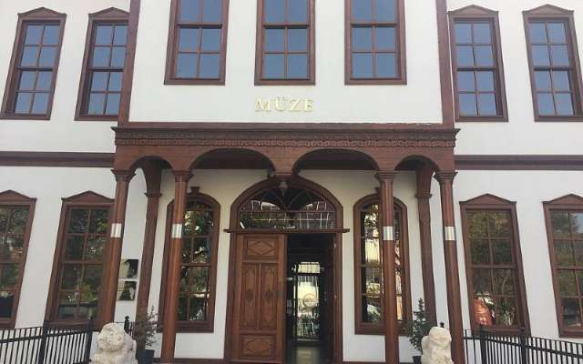
Çankırı MuseumÇankırı · Museum Çatalca Mübadele Museumİstanbul · Museum
Çatalca Mübadele Museumİstanbul · Museum Ancient Settlement of ÇatıörenMersin · Archaeological site
Ancient Settlement of ÇatıörenMersin · Archaeological site Çavuştepe CastleVan · Castle & historic building
Çavuştepe CastleVan · Castle & historic building Çayönü MoundDiyarbakır · Archaeological site
Çayönü MoundDiyarbakır · Archaeological site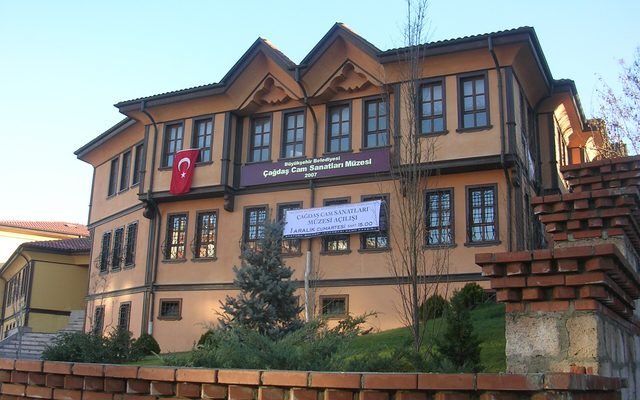
Çağdaş Cam Sanatları MuseumEskişehir · Museum Çemberlitaş Sütunu (Konstantin Forumu)İstanbul · Castle & historic building
Çemberlitaş Sütunu (Konstantin Forumu)İstanbul · Castle & historic building Çengelhan Rahmi M. Koç MuseumAnkara · MuseumÇevlik Archaeological SiteHatay · Archaeological site
Çengelhan Rahmi M. Koç MuseumAnkara · MuseumÇevlik Archaeological SiteHatay · Archaeological site Çeşme Museumİzmir · Museum
Çeşme Museumİzmir · Museum Çini MuseumKütahya · Museum
Çini MuseumKütahya · Museum Çoruh NehriArtvin · Rafting
Çoruh NehriArtvin · Rafting Çorum MuseumÇorum · Museum
Çorum MuseumÇorum · Museum Lake ÇıldırArdahan · LakeÖdemiş Museumİzmir · Museum
Lake ÇıldırArdahan · LakeÖdemiş Museumİzmir · Museum Öküzini CaveAntalya · Archaeological site
Öküzini CaveAntalya · Archaeological site Öküzlü Archaeological SiteMersin · Archaeological site
Öküzlü Archaeological SiteMersin · Archaeological site Özkonak Underground CityNevşehir · Underground city
Özkonak Underground CityNevşehir · Underground city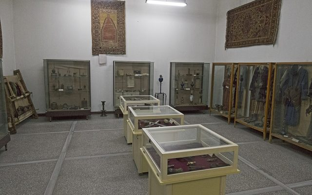
Ürgüp MuseumNevşehir · Museum Üç KümbetlerErzurum · Religious building
Üç KümbetlerErzurum · Religious building Üçayaklı Villa RustikaMersin · Archaeological siteAncient City of İdyrosAntalya · Archaeological site
Üçayaklı Villa RustikaMersin · Archaeological siteAncient City of İdyrosAntalya · Archaeological site İlhan Koman Heykel and Resim MuseumEdirne · Museum
İlhan Koman Heykel and Resim MuseumEdirne · Museum İlter Uzel Tıp and Diş Hekimliği MuseumAdana · Museum
İlter Uzel Tıp and Diş Hekimliği MuseumAdana · Museum Monastery of Stoudios (İmrahor Mosque)İstanbul · Religious buildingİnönü Savaşları Karargâh MuseumEskişehir · Museum
Monastery of Stoudios (İmrahor Mosque)İstanbul · Religious buildingİnönü Savaşları Karargâh MuseumEskişehir · Museum İshak Paşa PalaceAğrı · Castle & historic building
İshak Paşa PalaceAğrı · Castle & historic building İskele İkon Museumİskele · Museumİskenderun Deniz MuseumHatay · Museum
İskele İkon Museumİskele · Museumİskenderun Deniz MuseumHatay · Museum İslam Bilim and Teknoloji Tarihi Museumİstanbul · Museum
İslam Bilim and Teknoloji Tarihi Museumİstanbul · Museum İsmet İnönü House Museumİstanbul · Museum
İsmet İnönü House Museumİstanbul · Museum İstanbul Archaeology Museumsİstanbul · Museum
İstanbul Archaeology Museumsİstanbul · Museum İstanbul Deniz Museumİstanbul · Museum
İstanbul Deniz Museumİstanbul · Museum Galata Towerİstanbul · Castle & historic building
Galata Towerİstanbul · Castle & historic building İstanbul Havacılık Museumİstanbul · Museumİstanbul Havalimanı Museumİstanbul · Museum
İstanbul Havacılık Museumİstanbul · Museumİstanbul Havalimanı Museumİstanbul · Museum İstanbul Modernİstanbul · Museum
İstanbul Modernİstanbul · Museum İstanbul Oyuncak Museumİstanbul · Museum
İstanbul Oyuncak Museumİstanbul · Museum İzmir Archaeology Museumİzmir · Museum
İzmir Archaeology Museumİzmir · Museum İzmir Atatürk Museumİzmir · Museum
İzmir Atatürk Museumİzmir · Museum İzmir Kültür Sanat Fabrikasıİzmir · Museum
İzmir Kültür Sanat Fabrikasıİzmir · Museum İzmir Resim Heykel Museumİzmir · Museum
İzmir Resim Heykel Museumİzmir · Museum İzmit Deprem Anma and Farkındalık MuseumKocaeli · Museum
İzmit Deprem Anma and Farkındalık MuseumKocaeli · Museum İznik MuseumBursa · Museum
İznik MuseumBursa · Museum İzzet Koyunoğlu Şehir MuseumKonya · Museum
İzzet Koyunoğlu Şehir MuseumKonya · Museum Şanlıurfa Archaeology MuseumŞanlıurfa · Museum
Şanlıurfa Archaeology MuseumŞanlıurfa · Museum Şanlıurfa CastleŞanlıurfa · Castle & historic building
Şanlıurfa CastleŞanlıurfa · Castle & historic building ŞapinuvaÇorum · Archaeological site
ŞapinuvaÇorum · Archaeological site Ancient City of Şar (Komana)Adana · Archaeological site
Ancient City of Şar (Komana)Adana · Archaeological site Şarapsa CaravanseraiAntalya · Castle & historic building
Şarapsa CaravanseraiAntalya · Castle & historic building Şebinkarahisar Atatürk House MuseumGiresun · Museum
Şebinkarahisar Atatürk House MuseumGiresun · Museum Şehzade Mosqueİstanbul · Religious building
Şehzade Mosqueİstanbul · Religious building Şerefiye Cisternİstanbul · Castle & historic building
Şerefiye Cisternİstanbul · Castle & historic building Şirince Köyüİzmir · Castle & historic buildingŞuayb City (ancient site)Şanlıurfa · Archaeological site
Şirince Köyüİzmir · Castle & historic buildingŞuayb City (ancient site)Şanlıurfa · Archaeological site